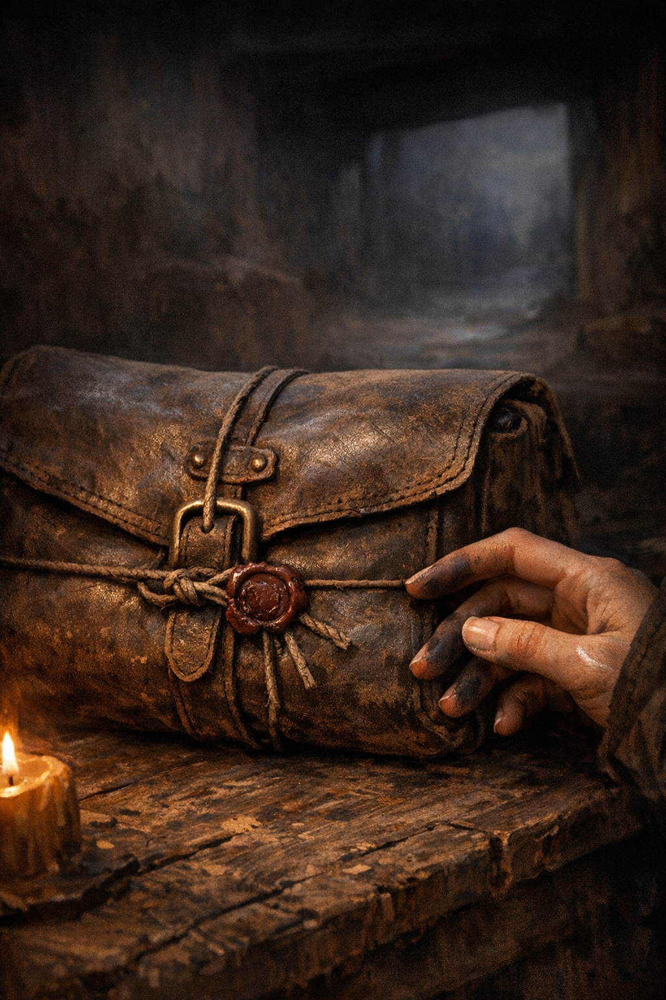

The Courier Job
The Courier Job
Departure
“You look awful,” Mara said.
Tess had been awake since two in the morning. She had repacked her kit three times, eaten nothing, and spent an hour sitting in front of the cold hearth rereading contract papers she had already memorized. She did not look awful. She looked like a person who had prepared thoroughly and then failed to sleep anyway.
“I’m fine,” she said.
“I know you’re fine.” Mara set the bag on the table. “You still look awful.”
Three months of apprenticeship had taught Tess that Mara’s observations were not complaints. They were just the state of things, named in the same flat tone she used for the well report and the cattle-ward schedule. Tess looked awful. The north ward was slipping. The mint had died over winter.
The bag was smaller than Tess had expected. Courier-grade leather, a sealed latch — the type you couldn’t open without destroying the closure — and over the latch, a disk of dark wax pressed with a guild mark. The interlocked rings of the Weavers’ Guild. Something official. Something that meant legitimate and legal and not your problem.
Tess picked it up.
It was heavier than it looked.
“The contract is straightforward,” Mara said from the writing table, sorting through a handful of papers without particular hurry. “Sealed delivery, paid in advance. You collect the second payment from the recipient’s office when she confirms receipt. Don’t let anyone else touch the payment document.”
“What’s her name?”
“Sable Orr. Advocate-recorder to the Asterhall city council.” Mara passed across a folded paper, her own seal already broken on it. “That’s my authorization confirming your role as courier of record. Don’t lose it. The address is in the contract papers; the Advocate’s Court district isn’t hard to find, and the boy knows the city.”
Tess added the page to the contract case — flat, organized, everything she’d sorted last night in the order she’d need it.
She turned the bag over. The wax seal caught the last of the firelight from the banked coals. She had spent enough time in Mara’s library to recognize the guild mark on sight; she hadn’t spent enough time there to know one version of it from another.
“What’s inside?”
“Nothing that concerns you yet.”
She heard the tone — not yet, not ready, you’ll understand after you’ve done more of them — and it was the same tone Mara used for every piece of knowledge that came in its own season. The well-depth calculation, the herb timing, the cattle-ward renewal. Tess moved her thumb off the seal.
“Tell me about the others,” she said.
“Brann.” Mara handed over the last of the papers. “The blacksmith’s second son. Seventeen, solid, doesn’t say more than he means to. He took the job for a debt. He won’t explain it.”
“Is he good in a fight?”
“I don’t know. I know he’s worked the forge since he was twelve. And when his sister’s creditor came to the house, Brann was the one who answered the door, and the creditor left.” A pause. “Draw your own conclusions.”
Tess drew them.
“Iri does real magic,” Mara said.
She said it exactly the way she said anything else — well water, bad weather, the chalk price going up again — and it still sat sideways in Tess’s chest. Real magic. The guild-trained kind. The immediate, powerful kind that didn’t require three hours of chalk circles and dried herbs and a cooperative night sky.
The kind Mara had never had. The kind Tess had never come close to.
“She’s been in Drey three years,” Mara said. “She has guild training. She’s not currently licensed, and I’ve learned not to ask further.” A beat. “She’ll use what she has when she needs to. Let her. Don’t try to match it.”
“I know,” Tess said.
Mara looked at her. It was the look that meant: you say you know, and I believe you believe that, and we’ll see.
“Pip knows Asterhall. He came to Drey two summers ago from the city. He’s fourteen.”
“He’s younger than me.”
“He is. In the city he’ll be worth more to you than the other two combined. Trust what he tells you about Asterhall. He’ll know things you won’t, and he won’t always say where he learned them. That’s fine.”
She found this somewhat wearing, and she hadn’t met him yet.
Mara stood at the table with the papers sorted and done, and she was just still for a moment. Not performing calm — Mara never performed anything — but standing there, looking at the bag and then at Tess, making some private accounting that Tess wasn’t going to be told the result of.
She picked up Tess’s right hand.
Not a squeeze, not a tug. She pressed it, flat-palmed, over the top of the sealed bag. Her hand was warm; the bag was cold.
“Deliver it whole,” she said. “Whatever happens on that road, deliver it whole.”
Tess waited for the rest.
Mara let go of her hand and turned to the cold hearth.
“Your kit is packed. I replaced the cord and restocked the salt. Three herb bundles — the standard travel set. I’ve wrapped the chalk so it won’t break if the bag gets wet, but try not to let it get wet.”
Tess picked up her kit satchel and put it on her back, then picked up the sealed bag. Both together, balanced on opposite hips. The kit was familiar by now — three months had worked it into her like a second skin: chalk in cloth, cord in its coil, the salt pot, the three bundles of herb. The bag was new and heavier and she had no idea what was in it.
She stood there for a moment with both of them.
Mara was at the hearth, her back to the room.
Tess went out.
Drey’s main road at four in the morning was mud and silence. The forge at the east end sat cold and dark. She passed the well at the road’s center and put her hand briefly on the coping — the water underground ran when she did this, she’d learned to feel it, a low habit she’d picked up without trying — and it was still moving, which was correct.
The square was a wider place in the road, two market stalls that only came out on Seventhday, the old post that had once held a guild-road marker. Cold. Nobody on it.
Except Brann.
He had a pack that sat at his feet like a piece of furniture — a thing that had been put there and was going to stay. He was seventeen, and the build of someone who’d been working a forge since he was twelve and had kept growing past it. He had dark hair and a coat repaired at the collar and cuffs, and when Tess came around the corner with both bags, he looked up.
“You Tess?”
“Yes.”
“Right.” He shouldered the pack and stood. That appeared to be the complete available information he intended to share. Tess set her bags at the post and stood. Brann looked at the road east. He looked like someone who had spent a lot of time waiting for things that would happen when they happened and not before.
The cattle ward on the north fence made a low ticking sound as the night chill peaked and began to ease. Tess had placed that one last month. It was holding well. She was pleased about this in a way she wasn’t going to mention.
Nobody spoke.
Then footsteps came from the south track — careful ones, the kind of footfall that was quiet without being secretive — and Iri came around the fence corner.
Half-elven, which at this hour was slightly more visible than at midday: the particular angle of her ears, the way she moved as if the cold were a design inefficiency she had noted and continued past. She was sixteen. She had a pack.
It was small.
Tess looked at it for two involuntary seconds and calculated three weeks of road. What she came up with was: that is not enough pack. She didn’t say so. They had shared approximately four sentences in three years of living in the same village, and none of them had been about each other’s packing choices.
Iri’s gaze moved across the group and settled — briefly — on the bag at Tess’s hip. On the seal specifically. There was a pause. Not dramatic: the width of a single breath, a moment where Iri’s eyes didn’t move on. Then she looked at the road east, adjusted her pack strap, and that was that.
Tess had the feeling of a door opened and closed before she’d seen what was behind it. She filed it.
“Three weeks,” Iri said. Not quite a question.
“Roughly.”
She nodded once. Apparently sufficient.
“—now the thing about the county toll-booth setup on this route,” said a voice from somewhere up the road, growing closer, “is that the road guild and the county haven’t reconciled their fee structures in about six years, which means anyone who argues from the county rate first saves themselves approximately one copper per checkpoint, and there are four checkpoints between here and Long Crossing, so—”
Pip came around the end of the fence line.
He was fourteen, which was the youngest of the four of them by a year, and he moved like someone who had learned to cross a room without being noticed and subsequently decided being noticed was fine, actually. He was on the shorter end of fourteen, with a quick face and an energy that suggested he ran at a different clock speed than other people. His pack was stuffed to maximum capacity — she could see it pulling at the seams — and under his left arm he was carrying a canvas-wrapped object roughly the shape and size of a small lute, or possibly a very narrow coffin, if the occupant had been very young and not particularly large.
He stopped when he saw them. Looked at Brann. Looked at Iri. Looked at Tess, and then at the bag on her hip.
“That the bag?”
“Yes.”
“Good.” He set the canvas object against the post and started adjusting his pack straps. “Before anyone points out that I’m last: I’m not late, you’re all early. Those are different things.”
“You’re four minutes late,” Tess said.
“By your standard. My standard says I’m here before we leave, which is the actual operational requirement.” He got the pack settled, tested it with a bounce. “Pip. Formally — though obviously Mara would have—” He put out his hand.
Tess shook it. His grip was quick and precise.
He moved to Iri, who permitted a handshake with the air of someone completing a task that had been explained to her. He moved to Brann, who looked at the offered hand for a beat and then shook it with the expression of a person making a measured concession.
Pip looked at the canvas object.
Tess said, “What is that?”
He looked at it. Looked at her. Looked at it again. Gave it a slight, considering nudge with his toe, the way you’d test whether a sleeping animal was actually asleep.
“Insurance,” he said.
“That’s not an explanation.”
“I know.” He turned back to the group, surveying them. “Right. So. Four of us.” He looked at Brann, at Iri, at Tess. “Muscle, mystery, hedge-witch, courier.” He spread his hands slightly. “Very professional operation.”
She had met Brann twice, briefly. She had passed Iri in the market and at the well and had an approximate sense of what she looked like but no real idea of anything further. She had spoken to Pip for six minutes last Tuesday, and most of those minutes had been Pip explaining something about the county toll-booth system.
This was the party. Three weeks of road, whatever happened on it, and whatever was inside the bag.
She picked up the sealed bag and her kit.
“Let’s go,” she said.
They went east.
The road out of Drey was mud, the wheel-ruts from last week’s supply cart frozen hard overnight, the ridges just high enough to catch a boot wrong. Tess found her footing by habit. Pip, moving quickly three steps ahead of her, hit an uneven section and went sideways. Brann’s hand closed on his elbow before Tess had finished seeing it happen — no particular fuss, no looking at him, just the hand and the weight held.
“Thanks,” Pip said.
Brann had already let go.
The village thinned the way it always did going east: the last row of cottages, the mill standing dark, the long field that went brown every winter and had three cattle wards Tess had helped maintain. The field markers. The fence line. The smell of woodsmoke thinning behind them.
She looked back.
Mara was in the doorway of the cottage. Small at this distance, standing straight, hands at her sides. Tess raised a hand. Mara did not raise one back, and by the time Tess had lowered hers, Mara had already turned inside and shut the door. Just shut it, like any other door on any other morning.
Tess turned east and kept walking.
The sky was gray and flat — no sunrise worth naming, just a slow paleness spreading behind cloud. The road ahead opened up where the village track met the county road, two rutted lines running east between bare hedgerow. Nobody else on it. The world smelled like cold mud and winter fields and faintly, already fading, the woodsmoke of Drey starting up behind them.
Pip was explaining something about the toll-booth at the river fork. Brann was walking. Iri had fallen into a pace slightly to Tess’s right and slightly behind, which read as a position, not an accident.
The last fence post went by. The last cattle ward — one of Mara’s older workings, the chalk lines long since worn from the stone but the thing itself still holding — sat at the corner where the county road began. Then they were past it.
A rider came out of the east.
Gray traveling cloak, hood back, road-worn look that belonged to anyone who’d been moving for a few days. The horse was in decent condition and moving at a road-traveler’s pace, not in any hurry. Coming toward Drey or somewhere beyond it. Tess stepped to the right edge of the road as a matter of course; the rider pulled slightly left; they were going to pass without incident.
His eyes went to the bag on Tess’s hip.
One flick. Fast. The kind that happens before the face has been told not to show it — eyes finding an object, tracking to the seal, moving away. He rode past them. The sound of hooves went west and diminished.
Tess was halfway through deciding she’d imagined it — she hadn’t slept, the bag was new, she was looking for things to find — when Pip appeared at her elbow.
“That man works for the Guild,” he said.
Quiet. No joke in it. He was looking at the road ahead, not at her. Still walking.
The road went east. Tess kept pace with it.
The Wagon Road
“—which is why the stitching doesn’t match the cart at all,” Pip said.
“Deserters,” said Brann.
The cart rumbled past them going west, its canvas cover tight and sun-worn and just well-maintained enough to not belong on a farm wagon running late-season goods. Pip watched it go. He looked at Brann. He looked back at the cart.
“Yes,” he said. “That’s — yes. How did you get there faster than me?”
“You already said everything,” Brann said. “I just said the word.”
He turned to Tess. Tess was watching the cart, the canvas, the way the wheels sat heavier toward the back than the load should have required. She had read it thirty seconds before Pip had started explaining it, but she also couldn’t have named it as clearly as he had.
She looked at the road.
“Anyway,” Pip said, and turned forward.
They were two days out of Drey. The river valley had opened up around them: broad fields, the road well-worn from a hundred years of wagon traffic, the opposite bank a line of bare willows going gold at the tips. Merchant carts in both directions. County travelers with the look of people who’d been doing this weekly for thirty years. Twice, horses with riders going fast on business that involved not looking at anyone they passed.
Pip had an observation about all of them.
“That’s the woman I’ve been watching since the mile marker,” he said, as a gray horse came past going the other direction. The rider wasn’t looking at the road. She had a ledger open across her saddlebag and was making notations with one hand while the other held the reins at about half-attention. “She’s been on that same page for two miles. Either she doesn’t care about falling off—”
“Road guild auditor,” Iri said.
She was walking slightly to the left of the group, not quite apart but not quite with them. She had her eyes on the ledger rider as the horse went past.
“The audit period runs through the last week of the month,” Iri said. “She’s behind on the quarterly numbers. The toll-booth at the county line this morning was underlisted by two carts.” She looked back at the road ahead. “The attitude makes sense.”
“The—” Pip started.
“Of someone doing overdue work,” Iri said. “Yes.”
She did not say anything further. Pip opened his mouth. He closed it. He turned to Tess.
Tess looked at the road.
Three seconds passed.
“Moving on,” Pip said.
The boy Pip had been watching since the second milestone — running in a field parallel to the road, cutting across the bare stubble at a pace that had nothing to do with the road itself — disappeared over a low rise and didn’t come back.
“Cutting across to tell someone they’re coming,” Pip said.
“We’re four people on foot,” Tess said. “Who would he tell?”
“Anyone with a reason to want advance notice of foot travelers.”
“Or he’s cutting across a field,” Brann said.
Pip considered this. “Also possible.”
Tess watched the rise the boy had gone over. The field was empty. The wind came off the river and the bare willows moved. She picked up her pace.
Night two was a barn two miles past the fork road, paid for with the road money Mara had put in the contract case. The farmer’s wife had shown them to the hayloft without making conversation and gone back inside, which Tess thought was an excellent arrangement for everyone involved.
The hay was dry. The barn was cold but not freezing. Brann had the heaviest pack and also, it turned out, the thickest bedroll — he unrolled it efficiently and it took up exactly as much space as his large and organized person required. Pip had the smallest pack and produced from it a blanket three times its volume. Iri slept in her coat.
Tess was still awake when Pip, who seemed physiologically incapable of silence, sat against a hay bale and started talking.
“There was a merchant in Asterhall,” he said. “Ran a spice import operation out of the Dock Quarter. Middle-aged, always in a red coat — the same red coat every day, which tells you something.”
“What does it tell you?” Tess said.
“That he’s either very proud of it or has never been able to afford another. Anyway.” He pulled a piece of straw from the bale and examined it. “Someone hired me to track his route. Not his trade route — his actual daily route. Where he walked, when, what he passed.”
“Who hired you?”
“A man who didn’t give his name. Common enough in that business.” He turned the straw between his fingers. “So I followed the merchant for three days. Three days of the red coat going in and out of guild offices and market stalls. On the fourth morning I worked out that the merchant wasn’t running his own route. He was following someone else’s.”
“Who?”
“A cloth trader. Elderly. Green hood. He went the same four places every afternoon — two guild offices, a counting house, a door on Wicken Street. Every day, like clockwork.” Pip put the straw in his mouth. “I watched him go into the Wicken Street door on the third afternoon and worked out, after about an hour, that he wasn’t coming back out. The door was a residential entry. His family lived there.”
He stopped.
A piece of hay fell from the bale overhead into the silence.
“His grandmother,” Iri said.
She was lying on her side with her coat pulled over her shoulder. Her eyes were open.
“He was visiting his grandmother,” Iri said. “On Wicken Street.”
Another silence. Pip took the straw out of his mouth.
“Probably,” he said.
Brann said, “Did the man who hired you find out.”
Not quite a question. Pip looked at the straw in his hand.
“He found out what I told him,” Pip said. “Which is that the merchant had an irregular pattern that couldn’t be explained by his trade routes.” A pause. “That’s not the same as finding out.”
Brann looked at the ceiling. This appeared to satisfy him.
“What did the grandmother look like?” Iri said.
Pip looked at her.
“I never saw her,” he said. “I watched the cloth trader going in and out of the doorway. I never saw anyone else on that landing.”
Iri nodded once and shut her eyes.
Pip opened his mouth, closed it, and did not speak for approximately forty seconds.
Then: “I think about that sometimes.”
He didn’t say which part.
Tess lay in the hay with both bags near her hands and the barn cold around her and thought about a grandmother on Wicken Street who had no idea anyone had been watching the door.
She fell asleep sometime after that.
Day three was colder and the road followed the river so closely that the mud stayed wet even in the frozen hours before noon. They walked. The merchant traffic thinned. By midday they were in quieter country, just the road and the brown fields and the smell of cold water.
Tess stopped at a milestone to drink from her canteen and set both bags down. Her left shoulder had a groove in it from the kit satchel’s strap. She rubbed it and reached for the bread in her pack and also, without particular fanfare, ran her right thumb around the edge of the wax seal.
Intact. The interlocked rings pressed firm under her nail. The seven characters circling the outer edge of the seal — she’d started reading them as a number without meaning to — unbroken, every one of them.
She put her hand back.
When she looked up, Brann was looking at the road.
He had been looking at something else before she looked up. He had moved his eyes to the road. These were simply facts about what his eyes had done; Tess was certain enough of this that she didn’t bother checking it.
She picked up the bags and stood. Nobody said anything. They resumed walking.
The bag’s strap settled back into the same groove in her shoulder with each step. She’d been aware of it since departure morning — this specific, insistent weight, two hands’ breadth below her left hip. It was a bag. It had no opinions about being carried. She was fifteen and she was giving a piece of leather more of her attention than it warranted.
She kept walking. The bag kept hitting the groove.
The checkpoint at the road junction had a stone booth and a queue and a man in blue-gray road livery. Not full enforcement blue — road guild, not enforcement wing — but guild-marked. The crest on his lapel was the same interlocked rings as the bag’s seal.
The queue was three wagons and a man with a mule. They joined it. It moved efficiently.
The officer was professional and quick — not the dead-eyed county toll man from the day before, but someone who actually read the papers he was handed. He worked through the wagons with the certainty of a person who’d done this eight hours a day and found it sufficient. Not hostile. Not curious. Just doing the job.
Their turn came.
Tess handed over the contract papers. He read them straight through, which she approved of, then checked the authorization against her face.
“Courier of record.”
“Yes.”
“Party of four.” He was writing as he spoke. “Sealed delivery, paid in advance, recipient confirmation in Asterhall.” He looked up. “Contract identification.”
She gave the number from memory.
He wrote it. He turned a page in the ledger.
“And the bag’s seal number.”
Tess looked at the bag at her hip. She moved her thumb to the wax disk and read off the seven characters pressed into the outer ring — two letters, a numeral, three letters, a numeral.
He opened his ledger to a new page. There were several entries already on it, all in the same neat column. He copied the seal number carefully, each character in turn.
Tess watched his pen.
He blotted the entry. He looked up at her.
“Is that standard?” she said. “The seal number.”
“For sealed contracts above a certain value threshold, yes.” He was already looking past her at the group. “Road toll is four coppers total. Pass on through.”
She paid it. She took the papers back. He turned to the next party.
They went through.
The junction road stretched east. The afternoon light was low and flat, turning the road surface amber. A wagon came the other direction, wheels crunching. Behind them, the stone booth diminished behind a stand of bare oak.
Tess waited until the booth was well behind them.
Pip said, “That wasn’t standard.”
Nobody responded.
They kept walking.
Day four the road turned south along the river and then swung back east through a stretch of low ground, the valley wider here, reed beds along the bank and the smell of cold water constant in the air. By midmorning they reached a crossroads where the road dipped down toward a ford — the river narrow and clear, the stones of the crossing visible in the low water.
A horse was standing at the ford.
Gray. Saddled. No rider. It had found a patch of water grass at the edge of the shallows and was eating it with complete unconcern, the bridle hanging loose, the saddle empty and turned slightly sideways. It had been standing there long enough for the bridle leather to have dried in the sun.
Pip slowed. He said nothing for two full seconds, which was unusual for Pip.
The horse was gray. The rider three mornings ago had been in a gray cloak on a gray horse moving west. Tess had filed these as a unit — gray cloak, gray horse, road-worn, heading toward Drey.
The unit was currently eating water grass without its rider.
“So where’d his rider go,” Pip said.
He was looking at the ford, at the far bank, at the empty path leading back up the opposite slope.
Brann looked at the same things Pip was looking at, in the same order. He didn’t say anything.
They crossed the ford ten feet downstream, keeping to the stones, the water cold enough to feel through the soles of her boots. The gray horse watched them cross with the expression horses had about everything that wasn’t grass or other horses. They reached the far bank. They kept going.
They were moving faster now. Not running. But faster.
An hour later the road climbed out of the low ground, rising above the river valley to a high stretch where the ruts went firm and the view opened up behind them: the whole valley, the bend of the river, the reed beds, the ford.
Brann stopped walking.
He didn’t say anything. He was looking back the way they’d come, and he turned his chin — a small, unhurried indication — toward the hill to the southeast.
Tess looked.
A figure. Standing on the hillside, off the road entirely, in the dead bracken near the crest of the slope. Not moving. Looking out over the valley road. The distance was enough that she couldn’t make out much — dark coat, standing upright, the stillness of someone who had been in one place for longer than they’d been passing through.
They all looked. The figure didn’t move.
Brann raised his hand. Not a wave — just a slow, deliberate raise of his right hand, palm out.
The figure turned and walked away. Not running.
They watched it go, over the hill’s crest. Gone.
Tess stood on the road with the valley behind her and the eastern road ahead. The wind came off the hill. Somewhere below, the gray horse was still at the ford.
They kept walking.
Somewhere between watching the figure and not watching it anymore, her right hand had found the bag’s strap and closed there, tight and specific, and she hadn’t told it to.
The Ambush
Pip had been talking since the first morning out of Drey, and when he stopped, the road sounded wrong.
Not suddenly. More like the running commentary — opinions about every cart they passed, theories about road conditions, an ongoing verdict on whether the last junction’s toll officer was undercounting livestock traffic and what he was getting out of it — had wound down without announcement.
He’d been in the middle of a theory about road construction. How a cutting like this one — placed at a river bend, the sight lines cropped in both directions, the river close on one side and the trees on the other — was either the worst planning the county road authority had ever done, or the best, depending on what you were planning for. He’d said:
“If you actually wanted to move traffic through here efficiently, you’d pull the bank back another ten feet on the south side and the whole—”
“Pip,” Tess said.
“I’m getting to the point.”
“I’m sure you are.”
“The point is the geometry is wrong all the way through.”
She’d said “Mm,” and he’d kept going for another thirty seconds, and then he’d stopped.
Not because she’d interrupted him. She’d interrupted him four times before lunch without effect. He stopped because the road had bent around the river scrub and the ambient noise had changed.
The road had come down off a gentle ridge and bent around a stand of willow and alder, bare-branched and gray-white in the November cold, and now they were in a shallow cutting, the land rising on both sides. The river ran close on the left, ten feet down through a tangle of bank brush. Trees crowded the right verge so close she could have reached out and touched the nearest trunks. Ahead: forty feet of visible road. Behind them: about the same. Then the bends.
The afternoon light came flat through the gap in the trees, turning the road surface amber. Everything between the bends was a closed fist of terrain.
Tess moved her thumb to the bag’s strap and didn’t look at it.
She looked at Brann instead. He was walking with one hand slightly loose at his side, near the knife at his belt — she’d seen him do this once before, the afternoon with the hillside watcher.
Pip was walking closer to Brann than he usually did. Not touching. Just there, two feet nearer, like he’d drifted and hadn’t drifted back.
The trees on the right had birds in them. Small things, slate-gray with long tails, busy in the lower branches with November’s particular restlessness.
Then they weren’t.
All of them. One wheeling lift, gone over the treeline before the sound reached the road.
Brann slowed.
He opened his mouth.
Three men came out of the ditch on the right side of the road.
They were dressed like road laborers — heavy work coats, boots, scarves up in the cold — and they moved like they hadn’t been standing in a ditch waiting for the last two hours. The nearest one was already past Brann’s position and coming for Tess.
Not for her.
For the bag.
His hand was going for the strap at her hip. He said to the man behind him: “Get the bag.”
Not get her money. Not her pack. The bag.
Brann’s shoulder came from the left and put him in the road.
There were two more from behind.
She heard them before she saw them — boots on packed earth from the south, cutting around the bend while the three from the right were moving. Flanking. Five of them. Coordinated, pre-positioned, dressed alike.
Her hands were already in the kit before she’d decided to go for the kit.
Tess backed up, got the cutting’s bank behind her, and started drawing.
She didn’t have time for a proper ward. A proper ward needed a dry surface and forty minutes and the kind of attention you gave a thing when your hands weren’t cold and your heartbeat wasn’t somewhere in your throat. What she had was ten feet of hard-packed road, thirty seconds, and the pattern she’d done enough times to not need to look at her own hands.
She drew fast. A rough circle, chalk skidding at the corners, and two lines crossing through it at the anchor angles. It would work once. Or not at all.
She sat back on her heels and got clear.
Across ten feet of road, Brann had the cutting’s narrow width to work with. Two men trying to get past him and neither finding a way around. He caught the first man’s wrist mid-swing and turned it — the knife hit the dirt — and the man made a sharp sound and grabbed for it with his other hand. Brann’s elbow came around. The man sat down hard.
The second one was bigger. He got both hands in Brann’s coat. Brann planted his feet and did not go sideways. They struggled: two seconds, three, four. Something caught Brann’s left forearm — the edge of a blade, going along the arm — and she heard the sound it made, and the sound his face did not make. He was working. That was what it looked like. Not fighting, not the thing she’d seen in Drey when the Smith brothers had their annual disagreement outside the inn — working, the way you worked a problem with a shape you recognized. The next thing and then the next.
The two from behind Tess were crossing the road toward her.
The nearer one hit the ward.
His front foot found the threshold line.
He stumbled — not badly, not a fall, just the catching of a foot that expected solid ground and found something marginally less than that. One second. Half a step. Two feet of position he didn’t have anymore.
She moved. That was all the ward had. She took those two feet.
Then Iri said something.
She’d been silent since the first man came out of the ditch. Completely silent — no warning, no run, nothing — and then she said the thing she meant. One word, or what might have been a word in something other than common tongue. It landed on the air like a stone placed rather than thrown.
It hit Tess in the back of her teeth.
The two men stopped.
Not fell. Stopped. Mid-step, both of them. Feet on the ground. Arms wherever they’d been. One with his mouth open on an unfinished shout. They were not unconscious — the second man’s eyes moved, tracking, fully present inside a body that had forgotten how to take instructions.
Tess counted. One. Two.
She looked at Iri.
The pallor was not like cold. Not like fright. It was something going out — all the brightness draining at once, the way a lamp went when the oil ran dry. She was still standing. Her hands had gone white at the knuckles and then past white to shaking, a fine tremor that had nothing to do with the temperature, and her shoulders were braced with the effort of staying upright.
Three. Four.
Five. Six.
Pip was there before Iri went down. She didn’t go down. She got both hands in Pip’s coat and stayed upright, and Pip had the good sense not to say anything.
Seven.
There was a man at the tree line.
He’d been there since the first man came out of the ditch — not engaging, standing at the edge of the scrub with one hand on a bridle. He had a horse behind him, bridled and ready to move.
He was watching the fight. Waiting.
Pip saw him.
Pip was still holding Iri with one hand. He looked at the horse-holder. He looked at the horse. He said, to nobody in particular: “Okay.”
He bent down and picked up a stone from the verge. He threw it at the horse.
He missed.
“Ah,” Pip said.
He transferred his grip on Iri to the other hand, got his right boot off with a focused and unlikely one-handed efficiency, hefted it once. He looked at the horse.
He threw the boot.
It was a very good throw.
The horse shied hard, twisted sideways, and pulled the bridle clean out of the man’s hand. The man grabbed after it and missed. He grabbed again and missed again. The horse ran — south, into the scrub, with the sound of snapped branches going fast and then faster and then faint. The man ran after it. His swearing got smaller with the distance, and then it was just undergrowth.
He was not coming back.
Eight. Nine.
The working expired.
The two stopped men found their legs again and the first thing they did was stumble, because they were back in motion before the balance was there for it. The first went down on one knee. The second came upright and looked at the road.
He looked at Brann: one man down, the other pinned against the cutting bank. He looked at Iri: upright, shaking, hands in Pip’s coat, the expression of someone who has done something expensive and is prepared to do it again.
He ran east. Fast, and not looking back.
The first one had a knife and got back up and came at Tess anyway. Brann stepped into his path without hurrying. The man’s momentum ran into Brann’s elbow and he went sideways into the road ditch. He put both hands to his leg and stayed there.
The one Brann had been working against — the big one, the one who’d had both hands in his coat — was on the ground with both arms under him. He did not move.
The birds didn’t come back. The sound of crashing undergrowth got small and then disappeared.
The river kept going.
Tess stood up.
Her right knee hurt from where she’d dropped to the road. She was still holding a piece of chalk. She looked at it and put it back in the kit.
Nobody said anything for a moment.
He was looking at the road with the expression of someone totaling a column of numbers. He had the short sword someone had dropped, turning it over in one hand. He had one boot on and one boot off.
“That’s it?” he said finally.
“Two ran,” Tess said. “One went after the horse. One in the ditch. One down.”
“Good count,” Pip said.
“Thank you.”
He turned the sword over once more. “Mine now.”
Brann was looking at his left forearm. A cut, about two inches along the outer arm, not deep, doing nothing dramatic, just bleeding in a quiet and steady way. He looked at it the way he’d looked at the wagon wheel with the bent spoke two days back: a problem that had a solution. He’d get to it.
Tess pulled the bandage from her kit and held it out.
He looked at it. He looked at her. He took it.
He tied it off himself — strip of coat lining over the linen, one-handed, tucked and tested. He looked at it once and was apparently satisfied.
“Thank you,” he said.
“Does it need anything else?”
“No.”
She put the linen away.
Pip went through the dropped packs with his free hand, still wearing one boot, the short sword tucked under his arm. Hard tack. A wax-cloth bundle with dried meat. A second knife in a sheath. A small purse, which he opened and looked into and closed again.
“Paid,” he said. “Not well. But paid.”
“Road bandits—” Tess started.
“Road bandits split from the take.” He pocketed the purse. “Someone gave these people advance money. That’s contract money. That’s somebody who wanted a specific thing and paid specifically for it ahead of time.”
He added a coil of rope to his pack without explanation.
“Why the rope?” Tess said.
“You always take the rope.”
Brann said nothing.
Iri was sitting against one of the willows on the left bank. Pip had produced, from somewhere, the heel of bread he’d been saving since morning — he had it out and handed over before Tess saw him go for it — and Iri was eating it with both hands, methodically, in the focused way of someone with something specific running low. Her hands had stopped shaking by about half.
She ate the bread. She didn’t say anything.
After a moment, she looked at the ward on the road — what was left of it, the smeared chalk circle and the rubbed-out lines — and looked at it for two seconds. Not the way you looked at something ruined. More the way you looked at something that had done what it was supposed to do.
Then she looked at the treeline.
Tess’s mouth opened. She closed it. Iri was already looking at something else.
Tess looked at the bag.
It was there. It had been there through every second of the fight — that specific, insistent weight at her left hip, the strap groove in her shoulder she’d been aware of for six days — and the seal was intact. The wax disk unbroken. Two letters, a numeral, three letters, a numeral, the interlocked rings at the center. She had been carrying it and it had been fine and she was checking it anyway.
She moved her thumb off the seal.
Her ward on the road was a smear and a circle that might, if you were being generous, still have been two lines. It had done the one thing it was going to do. She’d used about a quarter of her chalk on it. It had bought her half a step.
She could argue about the chalk. A full stick and a half when she’d left Drey — good chalk, from the market, packed by Mara in a cloth wrapper at the top of the kit. She had more encounters left than she had chalk to run them at this rate, and she didn’t know yet how many more encounters she had.
The man in the ditch was not talking.
He was angular-faced and road-dirty and he was looking at a point above the treeline with great concentration, as though something important was happening there and he was watching it happen. Not scared of them. Done. The math had come out wrong on his end and now there was nothing to say.
Get the bag. The one who’d reached for her had said it flat and practical, like the target had a name. Like someone had told him the target’s name. Like he’d been briefed on exactly what to take and where to find it.
Deliver it whole, Mara had said. Whatever happens on that road.
“Does he want to tell us anything?” she said.
Silence.
“Taking that as a no,” Pip said.
“We should move,” Brann said. He was looking east, the direction the runner had gone. “He ran east.”
“Yes,” Tess said.
East was where they were going. East was the road ahead, and the runner was somewhere on it, and the road bent at forty feet and she could not see past it.
Pip had both boots on now. He’d gotten the second one on while doing three other things simultaneously, which was either impressive or just Pip. Iri was on her feet. She’d gotten up without ceremony, without asking for help, upright and steadier than she’d been ten minutes ago and not advertising how much more steady she’d still need to be.
They were moving.
The road went east.
Then Tess heard it.
Hoofbeats. From the east. Fast, and getting faster.
Brann’s hand found his belt knife.
The Guild Token
It was a merchant.
Middle-aged, alone, a gray mule behind her on a lead rope, moving at the road-steady pace of someone who had logged too many miles to be in a hurry about any of them. She came around the eastern bend and saw the state of the road — one man in the ditch, one on the ground, two teenagers and a half-elf standing in a scuffed cutting with what appeared to be a minor arsenal — and did not alter her pace.
“Trouble,” she said.
“Past,” Brann said.
He had moved his hand off his belt knife somewhere between the hoofbeats getting louder and her appearing around the bend. Tess hadn’t seen him do it.
The merchant pulled up and looked the road over with the efficient calm of someone filing a report in her head. The man in the ditch. The one who wasn’t moving. Pip standing one-handed with a short sword tucked under his arm. The smear of chalk on the road that might, generously, have once been a circle.
“Not the first time this stretch has been trouble,” she said. “Three months it’s been bad. Guild’s got enforcers out. Looking for something, people say. Nobody knows what.” She adjusted the mule’s lead rope. She said it the way you said weather on the high road — regional, factual. “I’d offer to ride with you as far as the next market cross, if you’re heading east.”
“We’re fine,” Brann said.
The merchant looked at him and gave one short nod.
“Safe road, then.”
She clicked her tongue at the mule and moved on.
Tess watched until the mule’s tail went around the western bend. The river kept going on the left. The road was empty.
“She didn’t ask what happened,” Pip said.
“Merchants who travel alone don’t ask questions they don’t want answered,” Tess said.
“That’s extremely wise of her,” Iri said.
She was still against the willow bank, but she’d pulled herself upright while they’d all been watching the merchant go. Her color was still wrong. Her hands were down by about half on the shaking.
They stayed long enough to do what needed doing.
Brann’s arm needed proper attention.
He’d tied it off himself with a strip of his own coat lining and Tess’s linen from the cutting, and the linen was doing the actual work, but the coat strip would dry out and do nothing useful inside an hour. She opened the kit. Proper linen strips from the bottom of the satchel, and the salve — Mara’s own formulation in a wax-sealed tin, wintergreen-sharp and something underneath it she’d never identified, which Tess had packed over her own objection that she was already carrying too much weight.
He sat on a mile marker stone. She hadn’t asked him to. He sat.
She unwound the makeshift tie and looked at the cut. Two inches along the outer forearm, clean-edged, not deep. Already deciding to stop bleeding. She cleaned it, applied the salve, wound the proper bandage, and tied it off. He watched her work the entire time with the same attention he gave to road conditions.
“Thank you,” he said.
That was it. Possibly the entirety of Brann’s vocabulary for someone did a useful thing and I am glad of it.
“Keep it dry today,” Tess said. She was packing the tin back into the kit. “It should close by tomorrow if you don’t work the arm.”
“Yes.”
“I mean it about the dry.”
“Yes.”
She shouldered the kit. He was already looking east.
Pip inventoried while she worked on Brann.
He’d spread everything out on the verge with the practiced assessment of someone who knew what things were worth and what they weren’t: three short swords besides his own, one of which he gave to Brann, and one of which he held out to Tess. She took it. The packing list Mara had given her said nothing about short swords. The packing list also hadn’t said guild enforcement agents, day six. She was adjusting the list.
The belt knife in the tooled sheath went into Pip’s pack without discussion.
The ledger stub was three weeks old, from a road-guild sub-office west of the river junction. Not useful. Pip folded it once and put it in his coat pocket rather than leaving it.
The coins were standard road-guild stamp. Nothing.
The man in the ditch was not talking.
He was looking at the sky above the treeline with great concentration, as though something important was happening up there and he was watching it unfold. Not scared. Done.
His leg was not going to kill him. The next wagon east would find him in a few hours.
Tess looked at him. He looked at the sky.
“Does he want to tell us anything?” she said.
Silence.
“Taking that as a no,” Pip said.
They left him the second water skin. He didn’t say anything, and she walked away, and that was that.
Before she shouldered her pack, Tess went through the coat of the one on the ground.
It was the kind of thing that was necessary and slightly wrong in equal measure, and she did it the way she’d done other things in that category: efficiently, without stopping to think about it. Outside pockets first — nothing. She worked her way in. Inside panels. Seams. Lining. And there, under the coat, sewn into a pocket behind the breast panel:
A badge.
Small. Enamel on copper, maybe an inch across. A round design, and at the center — not the interlocked-rings mark of the Weavers’ Guild, not the road-guild’s chain motif. Something else: a flat horizontal bar with a solid circle above it, the whole design bisected by a single vertical line. Dark blue enamel on a copper backing. The kind of thing you wore under a coat rather than on it.
She had no idea what it meant.
She held it out toward Pip.
He took it. He looked at it. He turned it over. Five seconds.
“That’s enforcement wing,” he said.
Nobody said anything.
“Not road guild.” He set it flat in his palm. “Not trade guild. Enforcement wing.”
He looked up.
“I’ve seen that badge before. In Asterhall.” A pause. “Not on merchants.”
“So this wasn’t random,” Brann said.
“No,” Pip said.
Tess looked at the bag.
Her eyes went there on their own — to the wax seal, the seven-character number pressed around the interlocked rings, the dark leather unmarked except for six days of road dust. Intact. Fine. She’d checked it thirty minutes ago.
She moved her thumb over the seal anyway.
Get the bag. Flat and certain. Like someone had told him the name of the thing before the job started.
“Keep the badge,” Iri said. She was still against the willow bank. “Don’t show it at checkpoints.”
Tess closed her fingers around the copper disk. Cold through her palm.
They moved.
Day seven was quieter.
Pip talked, but at roughly half the usual rate and without building to anything. He had thoughts about the farmland they passed and the drainage situation in the lower valley, and the market cross at midday — guild or county, it mattered for the toll rate — and whether the road surface through this section was county-maintained or had defaulted to guild upkeep, which would explain the ruts on the left shoulder. She left him to it.
Brann walked beside her. This wasn’t new — they’d been loosely parallel for most of the road. What was new was his stride. He was taller; his natural pace covered more ground per step. He hadn’t been shortening that stride for six days. He was shortening it now, without anything being said about it, without even a performance of adjustment — just a small, consistent calibration.
She didn’t say anything. He didn’t either.
Her kit assessment went like this: chalk, down a quarter from the ward, still good for at least two more rough workings or one proper one with time and a dry surface. Herbs intact, still wrapped in their cloth bundles, not touched since Drey. Salt sealed. Cord coiled. If she burned chalk at the same rate she’d burned it in the cutting, she would run short before Asterhall. If she was more careful, she wouldn’t. She would be more careful.
The valley road was flat and straight through the afternoon. Good sight lines. Farms on both sides. No cuttings. No places the trees came in close on both sides of the road.
That evening they bought bread and eggs from a farm half a mile off the east verge — low stone walls, a well, a handful of chickens, an old man who charged them three coppers and added a small sack of coal to the deal without explanation, which none of them had expected but none of them turned down.
They built a fire on a flat patch of ground back from the road. It was the first real fire and the first real food in two days, and Tess’s hands stopped being cold for the first time since the cutting.
Iri ate two eggs and most of a bread round with the focused, methodical approach of someone doing maintenance rather than eating. She had most of her color back. She looked tired in the deep way.
Pip sharpened the short sword on a flat stone he’d picked up from a creek bed somewhere on the afternoon’s road. The sound was even and unhurried and Tess found it, unexpectedly, easier to think through. Brann sat at the edge of the firelight and unwound the bandage on his arm and looked at the cut and rewound the bandage. He didn’t make a face. The cut was fine; she could tell from here.
They talked about other things.
The road ahead: Long Crossing in two more days, maybe one if they pushed, with the weather holding west at least two more days by the look of it. Whether the farm’s old man had seen any traffic east today — he hadn’t — which meant the road was either safe enough or empty enough that no one was pushing east in November without a reason. Whether the coal sack was worth carrying. This last one got some mileage.
“It’s coal,” Pip said. “Free coal. That’s objectively favorable.”
“Extra weight,” Brann said.
“Extra weight we didn’t pay for. There’s a distinction.”
“There isn’t.”
“Philosophically there is. The coal is, at this moment, doing conceptual labor on our behalf—”
“Pip.”
“—as a symbol of our resourcefulness. As a group.”
Brann looked at him.
“Never mind,” Pip said.
Nobody said anything about the badge. Brann had said this wasn’t random at the cutting. The badge was in Tess’s kit pocket, cold through the leather. She was not taking it out tonight.
She had moved on to the chalk math again — rate of use against days remaining, whether the rate was predictable, how many more days this road had with the same kind of geometry as a river-bend cutting — when Iri said, without any introduction:
“I know that seal.”
Tess looked up.
Iri was looking at the fire. Not at any of them. Bread in one hand, knees up.
“The enforcement wing design. I’ve seen it worn by people in Asterhall.” A pause. “In places I used to know.”
Pip had stopped sharpening.
“I was wrong to be surprised they sent this many.”
Tess opened her mouth.
“We should move at dawn,” Brann said.
Iri went back to her bread. Nobody asked what places.
The Innkeeper at Long Crossing
Pip changed at the first cobblestone.
It wasn’t a visible thing — he didn’t announce it, didn’t speed up his walk or shift his shoulders or put on a different face. But Tess had been watching him for nine days on a dirt road, and at Long Crossing’s edge where the town street began and the paving began with it, something behind his eyes went from road-alert to something else. Older. Faster. More comfortable.
“Market square’s ahead,” he said. “Two inns left, one right. That one—” a gesture, not quite pointing, toward a three-story building with a blue sign “—has a kitchen and a fence that closes. Don’t like the fence.”
“Why not?” Iri said.
“Only one direction out.”
Long Crossing was the largest thing Tess had seen in nine days of road. She wouldn’t call it big — Mara had described Asterhall, and this was not Asterhall — but it had a proper market square with a stone guild-seal set into the paving, cobbles worn smooth at the center where the wagon traffic ran, three separate wells, and the smell of hot bread from somewhere she couldn’t see yet. Livestock. Coal-smoke. Something that might have been rendered tallow from a chandler further in. Noise, which she had missed without knowing she’d missed it.
Pip moved through the market at a walk that somehow covered more ground than anyone else’s. He wasn’t hurrying. He was just reading.
“Road guild office is there.” A slight angle of the chin. “Seal above the door is the county mark crossed with the guild charter. They hold the east road license. Contested — see how the county seal is slightly larger?”
Tess hadn’t seen. She looked. It was slightly larger.
“That one,” Pip said, stopping in front of a mid-sized inn: two-story, stone frontage worn to a comfortable gray, a carved wooden sign with two painted keys crossed over each other. The Crossed Keys. “That one’s the one.”
“Why?” Brann said.
“Two exits. Kitchen at the back — I can tell from the steam coming off that wall. And the innkeeper.” He tilted his chin toward the open door. “Watch.”
A woman in her fifties stood in the doorway with nothing visible in her hands. But her eyes were moving across the square in a rhythm that was too regular to be idle: market stall, wagon, face, face, road guild door, face.
“Counting,” Pip said. “I like an innkeeper who counts things. Means she knows what’s in her house.”
“You like an innkeeper who counts things,” Tess said.
“Better than one who doesn’t.”
Then she went in.
The innkeeper’s name was Rossa.
Compact, brown coat, gray hair pinned back with something practical rather than decorative. She moved through the common room the way a river moved through a channel it had made itself — the exact same route, worn smooth, utterly efficient. She looked at the four of them. She looked at their packs. Her eyes moved, briefly, to the bag on Tess’s left hip.
“Full,” she said.
“We don’t need much,” Tess said.
Rossa looked at them again. Longer.
“Upstairs,” she said. “One room, two beds. You’ll manage.”
They managed.
The common room smelled like hot meat, tallow, and someone’s wet wool drying too close to the fire, and Tess sat down on a bench that did not tip and pressed her palms against the table and let the warmth from the grate reach her.
“Food,” Pip said, addressing the room in general. “I would like some.”
A girl appeared from the kitchen — maybe twelve, clearly Rossa’s, same counting eyes — and took their order. Tess asked for the meat pie because she could afford it tonight, which she had not been able to say for most of the last nine days.
The common room was half-full. Two merchants deep in a contract argument at the back table, a document spread between them. A family in the far corner, parents and two small children, the younger one asleep across the mother’s lap. And at a corner table on Tess’s left, a man who had come in just after them and had not ordered anything.
He was watching the room.
Pip saw him within thirty seconds.
She knew because Pip’s elbow came off the table in a small, completely casual adjustment, and after that he didn’t look at the corner once.
The food came. Real food. The meat pie was actual meat and the bread was this morning’s and Tess ate without stopping to think about anything and for a few minutes there was only that.
Rossa brought their second round of water herself.
“Good road?” She was looking at Tess.
“Manageable,” Tess said.
“Coming from the west?”
“Yes.”
“Heading east.” Not a question.
“Eventually,” Tess said. Under the table, Pip’s foot pressed lightly against hers.
“East road’s been busy this season.” Rossa set the last cup down, her hand moving over the table in a practiced way that collected a spoon and straightened something that hadn’t been crooked. “Sealed goods in transit?”
Tess’s hand had moved to the bag’s strap before she decided to move it. She moved it back. “Just us.”
“Guild requires a manifest for sealed contract items. For overnight lodging, there’s a standard procedure—”
“That’s not a law,” Pip said.
He said it very quietly. To his pie.
Rossa’s eyes didn’t move.
“I can show you our contract papers,” Tess said. “That’s what we have.”
She opened the contract case and laid the relevant sheets on the table. The authorization. The contract itself, with the seal number and Sable Orr’s address in the inner fold. Not the bag. The papers.
Rossa read them. She nodded once. She pulled a ledger from under her arm, flipped it to a page with columns — names left, road notation, a third column for something Tess couldn’t read from the angle — dipped the pen, and wrote.
Tess watched the ledger.
At the binding, where the leather spine met the cover: a small inlaid seal. Enamel on brass, maybe half an inch. A flat horizontal bar, and above it a circle, bisected by a line.
She had seen that shape before.
The thought was half-formed and gone, because Rossa was already handing back the papers and saying “room rate is four coppers, meal is separate” and Tess took the papers and said “fine” and the moment passed.
Rossa’s eyes moved to the bag at Tess’s hip — the same duration, the same return to neutral she’d seen from the guild rider outside Drey and from the checkpoint officer at the junction tollbooth. Then Rossa took her ledger and walked back toward the kitchen.
“That’s not a law,” Pip said again. Still to his pie.
“You said that,” Brann said.
“Worth saying twice.”
The man in the corner still had his cup. He’d come in with it — she could tell from the way he held it, slightly away from him, like someone waiting rather than drinking. He wasn’t watching them specifically. He was watching the room in the same methodical way Rossa watched the square, and the room included them.
After a while, Pip said: “He came in behind us.”
Nobody answered.
“He’s not staying here. He’s waiting for something. Look at the cup — hasn’t moved in twenty minutes.” A pause. “He’ll leave when we go upstairs.”
“Then we go upstairs,” Brann said.
Pip considered this. “Agreed.”
Brann looked at Tess. Not performing it. Just looking.
“I’ll take first watch,” he said.
The room upstairs was small.
Two beds was optimistic: one full bed against the near wall and one narrow cot built into the wall opposite, with a tallow candle stub on the sill of a window the width of Tess’s shoulders that looked out onto an alley. Iri took the near side of the full bed without discussion. Pip took the far side. Brann pulled the single chair to the wall beside the door, sat down, and became something very like a piece of furniture: still, present, oriented toward the entrance.
Before she lay down, Tess tested the door latch. Old habit from Mara: know your exits before you sleep somewhere unfamiliar, touch the handle, feel whether it sticks. It didn’t stick. The hinge was quiet.
She also tested the side door on the landing — the inn’s second exit, which Pip had located on their way upstairs — and that one was quiet too.
Then she lay down on the cot and put the bag under her arm.
More precisely: she folded her left arm over it so the bag was against her ribs and the seal was pressed into her palm, and her arm was between the bag and the wall. It was not comfortable. She had been sleeping like this since the cutting on day six, and her left shoulder had been noting its objections. The left shoulder could keep noting them until Asterhall.
She closed her eyes.
She wasn’t sure when she’d fallen asleep, but she woke to Brann crouching beside the cot.
No sound. No shake. Just suddenly there, close enough to see his face in the dark.
He raised one hand flat: slow. Quiet.
She sat up.
He moved his hand palm-down, slowly: not a threat. Something else.
She watched him. He looked at the room, and then at her, and tilted his chin toward the near wall where the packs were stacked — three and her satchel, all of them together. He touched his own pack’s front buckle. The shoulder-strap buckle. She could see it was latched.
He had left it loose. She could tell from the way he was looking at it.
She checked the bag. Ran her thumb around the wax disk: solid, unbroken, the seven-character seal number where it belonged. The circuit once, and again.
She checked her kit satchel. The chalk’s weight sat slightly off from where she’d packed it. Not dramatically — half an inch, a shift. The inner pocket: the enforcement wing badge, cold through the leather, still there.
She looked at Brann.
“We leave before dawn,” she said.
“Yes,” he said.
That was all of it. He was already standing.
They woke Iri and Pip.
Pip surfaced fast — Tess had suspected he’d been running on three-quarter sleep anyway, the way he always did somewhere new — and took in the situation without asking any questions. He looked at the buckle on Brann’s pack. His expression went flat.
“My watch,” he said.
“Yes,” Brann said.
“Which was going to be nothing.” Pip looked at the ceiling. “Isn’t it always nothing, with people this professional. They were already done.”
Iri sat up and looked at the window for three seconds, reading the light. Then she reached for her boot.
She stopped.
She pulled something from inside her coat — a heel of bread, which she had apparently come upstairs carrying — and ate it in four unhurried bites before finishing with the boot.
“Good thinking,” Pip said. “Always eat before you run.”
“We are not running,” Iri said.
“Leaving before dawn without finishing the night out is running.”
“I will pay the full night rate.” She laced the boot. “I intend to eat while I decide to do it.”
Brann was already repacking. He did it in the dark by feel. Straps latched and coat on before Pip had located his second boot. He didn’t make any noise doing it.
Four people in a small dark room. No lights — the tallow candle had burned to nothing on the sill, and Tess let it go. They didn’t need it.
She left four coppers on the windowsill. That was the rate, and it was fair, and it had nothing to do with the rest of it.
She shouldered the bag and her satchel and followed Brann out.
The side door opened onto the alley without a sound.
The alley was empty. The market square beyond it was gray — not full dark, not light, the color of cold ash that was just beginning to decide it might become something else. The market stalls were shuttered. A single lamp burned in the road guild office window. A dog crossed the far end of the square with the purposeful indifference of a dog who was going somewhere specific and had no interest in being watched.
They came out of the alley and Tess stopped.
The man from the corner table was on the street below the inn’s window.
She was almost certain. Different angle, predawn, she’d only seen him by common-room firelight — but the coat was the same, and the way he held himself was the same, the particular stillness of someone who had been waiting in one place for a specific length of time and was not done waiting.
There was a rider beside him.
Fresh horse. Saddled and standing easy, not the restless shift of an animal that had been standing too long without moving. Ready. The kind of ready that came from having been kept saddled specifically for the moment it would be needed.
The corner man was talking. Low, quick. The rider was listening with his chin down, the posture of someone taking in information efficiently rather than politely.
Pip’s hand touched Tess’s arm. She moved.
They went in a group toward the square’s western edge, keeping the market stalls between them and the inn’s window line. Slow. Nobody’s boots scraped the cobbles. Brann moved large and careful and absolutely silent, which Tess had stopped being surprised by sometime in the last four days.
She kept her eyes on the rider.
The corner man finished talking. The rider nodded once — the same kind of nod Rossa had given over their papers, the nod that meant received — and gathered his reins.
He turned the horse east.
Trot first, out through the square’s far end, past the shuttered stalls. Then the side road at the mill, the one that continued east, and he was around the corner and gone.
East. Toward Asterhall.
Tess stood at the edge of the square and the cold came up off the cobblestones and the lamp in the road guild office made the only warm color in any direction. She watched the corner where the rider had gone until there was nothing left to see there.
East was where they were going.
East was where the word was going now, and faster.
The Rival Party
“These people are following us,” Pip said.
“They’re on the same road,” Brann said.
“That’s what following looks like when it’s good.”
Tess hadn’t needed to look back. She’d been counting the sound of hooves behind them for the last quarter-mile, steady at their exact pace — not gaining, not falling behind — which was how you followed someone when you wanted them to notice but not feel threatened. She looked anyway.
Four of them. Horses — not road-worn, properly maintained — and packs loaded with the easy confidence of people who traveled well and knew it. Two who moved like fighters: square-shouldered, tracking the road in both directions, the body language of people who checked exits as a reflex. A fourth with a ledger under one arm and the kind of organized stillness that was its own kind of watching. And the woman who wasn’t quite in front but who Tess’s eyes kept finding.
Brown coat, well-fitted. A decade older than Mara, maybe two. She was reading the road — not scanning for threats, but reading it the way you read something you knew well, the way Pip read a market square or Brann read a room’s exits. She was the decision-maker. You could tell because she was the only one not positioned for something.
“They’ll catch up,” Pip said, “or they won’t. We’ll know in five minutes.”
They knew in three.
The woman did it right.
She let the distance close at a walk, didn’t call out, didn’t accelerate in the last stretch. She just drew level with Tess and said, “Same road?”
“That’s the road,” Tess said.
“Safer in numbers.” She matched their pace as if she’d always been at it. “There’s a bad stretch ahead — oak country, good cover for trouble. We’ve run this road before. You’d be welcome.”
She had the confident calm of someone who had made this offer many times and usually had it accepted. Not pushy. Just sure.
Tess looked at Brann.
He was already watching the two fighters. Not confrontationally — the same steady awareness he used on anything that might become a problem. The nearer fighter noticed him noticing. They looked at each other, two people measuring, and neither of them changed their expression.
“Fine,” Tess said.
They walked together.
Pip attached himself to the ledger-person with the cheerful inevitability of a burr. He started talking within thirty seconds — questions that sounded like nothing, observations about the road that sounded like less, the whole comfortable current of his usual patter. Tess had watched him do this at three different toll checkpoints and an inn, and each time he’d come out of it knowing something useful. He was doing his best work. She could tell from the angle of his shoulders and the particular brightness of his voice when he was working hard.
The ledger-person was polite. Unhurried. They offered remarks about the road conditions ahead, the weather, the paving quality past the oak stand. They were not unfriendly.
They offered nothing.
Not cautious-nothing. Not suspicious-nothing. Trained-nothing — the specific kind of nothing that came from knowing exactly how to fill a conversation without putting anything real in it. By the time Pip gave up and drifted back toward Tess, he hadn’t learned a single thing about who they were, where they’d come from, or what they were doing on this road.
Pip, who could get a life history out of a checkpoint officer who didn’t want to talk, had gotten air.
He fell in beside Tess and said nothing.
Brann was walking on Tess’s right. Once, he shifted his angle by half a step — just enough that both fighters were in his sightline at once, and the fighters were in his peripheral reach. The nearer one saw him do it. The fighter adjusted his position in a way that was perfectly social and utterly deliberate, and he and Brann both pretended that had been an accident.
Iri said nothing to the rival party. Not one word.
On the road Iri was quiet, but she wasn’t silent — she answered questions, offered the occasional observation about distance or terrain, contributed the minimum presence of someone in a group. To the woman’s people she said nothing. Not even a word when the woman’s ledger-person said something directly at her about the road conditions ahead. Iri looked at the road instead and kept walking.
The woman’s eyes tracked to Iri for a moment. Then she looked away.
Pip getting nothing from the ledger-person, that meant the ledger-person was trained to give nothing. Brann and the fighters reading each other, that meant both sides knew what the other was. Iri saying nothing at all, that meant Iri had already calculated something about this group and wasn’t engaging until she had to.
The oak stand cleared ahead. A road marker. A stone well. A clearing that had been a midday rest stop for so long it had smoothed itself out — ground packed flat, tree roots worn at the edges where people sat, the well’s stone base stained from a hundred years of travelers eating lunch on it.
The woman said, “Midday?”
“Yes,” Tess said.
The well was dry.
Tess sat on its edge. The woman sat near her, and for a while they ate — or the woman ate, purposefully, the way she did everything, and Tess ate while watching the clearing. The fighters had taken up positions at nine and three, not standing over anyone but positioned. The ledger-person had their book open and was writing something, which Pip was trying to read from twenty feet away, angling his head with increasing lack of subtlety.
Iri was at the clearing’s far edge. She had not sat down. Her hands were at her sides and she was not looking at the rival party. She was looking at the trees.
“Contract run,” the woman said.
“Freight,” Tess said.
“Freight.”
Vel — the woman, and Tess had caught the name in the first ten minutes of their walk, half of it from the ledger-person’s careful not-saying it — looked at the bag on Tess’s hip. The same duration, the same return to neutral. Everyone on this road looked at the bag exactly that way.
“I’m going to say this once,” Vel said. “Because we’re going to have to do something else if I say it and you say no, and I’d prefer not to.”
Tess waited.
“I know you’re carrying a sealed contract bag. I know where it’s going. I know roughly what’s in it.” She looked at Tess directly. “I’ll pay twice the contract fee. Coin, correct weight, this afternoon. No questions after you hand it over and no trouble following you back.”
The clearing was very quiet. The ledger-person had stopped writing.
“You’re four teenagers on the road with a bag that people are willing to hurt you for. You’ve figured that out by now — I’d guess the first encounter was about a week back, maybe a week and a half.” She let this sit. “Hand it over. Take the money. Go home. Nobody gets hurt, and that is genuinely the better outcome for you.”
She meant it.
She had done the arithmetic on this situation and arrived at an offer she considered fair. She wasn’t performing. If Tess had handed over the bag, Vel would have given the money, correct weight, and walked away without a backward look and thought she’d done right by them. She was making the offer she would have wanted to receive.
“No,” Tess said.
Vel’s face did something small — not anger, not surprise. More the expression of a traveler confirming they’d taken the longer road.
“That’s going to make this harder.”
“Probably,” Tess said.
A beat.
Vel raised her hand. Two fingers. Slight.
The fighters stood.
Brann was already moving.
Not back. He went forward and left and turned so both fighters were in front of him instead of to his sides, and his stance said he’d been expecting this since before the offer started. He moved the way he’d moved in the river-bend cutting on day six — no surprise, no wasted motion, just solid placement, like someone who had already chosen their ground and didn’t need to choose again.
The nearer fighter — broader, probably trained longer — came in with his shoulder. He hit Brann and Brann didn’t move. Not a stumble, not a rebalance. He absorbed the shoulder hit and held, and the fighter pulled back to try the angle again.
The second went right, trying to get past him.
Brann’s arm came out.
Tess moved.
She went left, cutting around the well, toward the tree line at the clearing’s far edge where the oaks grew close enough to narrow any approach. Behind her she heard the leather-slap of the ledger-person dropping the book — of course they’d drop it, of course the ledger was just something to carry — and then Pip was in the gap.
She hadn’t seen him draw. But the short sword was out.
He placed himself between Tess and the ledger-person with the easy confidence of someone who had already decided swordsmanship was optional, because swordsmanship was technique and technique was predictable and the thing Pip had going for him was that he was not predictable. He moved left when the ledger-person moved to counter. He went right when right made no sense. He threw the sword — just threw it, handle-first, sideways across three feet of air — and the ledger-person’s eyes went after it. Which was the moment Pip caught the return with his off hand and went low, under a swing no sensible person would have gone under, because the person making the sensible calculation had been watching the sword and not Pip.
Tess got to the tree line.
She looked back. Brann still up. One fighter had gotten a shoulder past his guard and was working his ribs; the other was pushing against his planted front leg, trying to unbalance him. He was taking it. He was taking it with the grim, methodical quality of something load-bearing that hadn’t been told it was allowed to fall.
The nearer fighter had gotten around Brann’s left side. He was coming toward her.
Her hand went into the satchel.
Thirty seconds. Minimum. A proper ward took thirty seconds on packed dirt with a clean surface, and she was standing in leaf litter on roots, and the chalk stick was not going to become a ward before he reached her.
What she had was the chalk stick and the cloth it was packed in.
She threw the stick. Hard. At his face.
It glanced off his temple — not the eyes, but close — and she was already pulling the wrapper’s corners apart, shaking the chalk dust that had collected in the folds over a week of road. She threw the dust. Both hands together. It went everywhere. Some of it, enough of it, went into his eyes.
He stopped. Hands up. Shaking his head.
Three seconds. Maybe four.
She moved deeper into the trees, into the space between the two largest oaks where there was only one good direction of approach. She planted her feet and turned.
He was already clearing his vision. The white-out from the dust was already passing. He located her, oriented, and started toward the narrow gap.
Behind her — behind him — Iri moved.
At the far edge of the clearing, Iri’s hands came up. Not high — just slightly raised at her sides, the same small gesture from the river-bend cutting, the same quiet nothing-visible until everything changed.
The air in the clearing did something that wasn’t movement and wasn’t stillness. It was both at once, for a half-second, and then it resolved.
Both fighters went off their feet.
Not stumbling. Not pushed in the usual sense. Off their feet — the one at Brann’s side hit the well base and went down and stayed down, and the one three feet from Tess cleared four feet of ground without wanting to and landed in the leaf litter on his side.
The working was still completing when Iri went down.
She didn’t fall sideways. She didn’t trip. She folded — both knees to the ground while her hands were still raised, the last of the working finishing as she went, like something running out of water while the last of it poured through. The working completed and she was on the ground and her hands were in the leaf litter and they were shaking.
She made no sound.
The clearing went quiet.
The fighter at the well base was moving. Slowly. Working up to one knee with the face of someone whose body was answering under protest. The fighter in the leaf litter near Tess had not gotten up fast.
Pip had his sword at the ledger-person’s side — not theatrically, just there, the blade present as a fact of the situation. The ledger-person was still.
Vel had not moved from where she’d been sitting.
She looked at her fighters. She looked at Iri on the ground. She looked at Tess, standing between the two oaks with the bag against her ribs and chalk dust on her hands.
Her face was doing the arithmetic.
“You have no idea,” she said, “what you’re carrying.”
Her voice was the same voice she’d used for the offer. No heat in it.
Tess said nothing.
“Someone’s testimony.” She said the word precisely — not secrets, not documents, not contraband, not evidence, not any other word. Testimony. Like she’d been briefed on the exact term. Like she was using it because she knew it was the right word. “You know that? You’re going to die for someone’s testimony.”
She looked at Tess for a moment longer. Long enough to see if the word had landed.
It had. Tess couldn’t do anything about that.
Vel picked up her waterskin from the ground. She looked at the ledger-person, who moved away from Pip’s sword in the careful way of someone who respected the geometry of the situation. She looked at the fighter at the well base — upright now, one hand on the stone — and at the fighter in the leaf litter, who had gotten to his knees.
She waited until both of them were on their feet.
“Come on,” she said.
They went.
Not running. Controlled, deliberate movement — the measured speed of people who were choosing their pace, not being pushed by anything. They crossed the clearing’s far edge. One of the fighters turned once: not threatening, just confirming the angles behind him. Professional. Then the trees took them.
Pip watched the tree line for a full thirty seconds.
“Right,” he said. He put the sword away.
Tess was already at Iri.
She was on the ground. Breathing — yes, chest moving, the color gone completely from her face, the full deep pallor of depletion. Worse than the river-bend cutting. That working had cost her color and steadiness; this one had taken her legs before it was finished. Her hands were in the leaf litter and they were shaking in the way hands shook when they were no longer operating as hands — past the fine tremor, into the shaking of something that had been run past its limit.
Iri looked up at her. Eyes clear.
“Bag,” she said.
“Intact,” Tess said. “Sealed. I already checked.”
Iri’s eyes closed. One breath. When they opened again she was already trying to get her hands under herself to push up.
Pip was there before she’d tried twice.
He crouched beside her, got one hand under her arm, and waited. No announcement. No remark. He just put himself there and waited, and let her decide.
Iri looked at his hand. She looked at his face.
She let him help.
He got her to her feet carefully and stayed beside her until she’d found her balance, and said nothing.
She sat on the well’s edge and put both hands flat on the stone. The tremor was visible even pressed flat against the surface.
“Food and water,” Tess said. “Both of you.”
Her own hands were fine — steady, which she was not going to make anything of — but her mouth was chalk-dry and she’d been running on focused attention for the last four minutes and that had to cost something. Pip was already distributing: hard tack, a waterskin passed first to Iri. He did this with the speed and precision of someone who had decided eat before you assess anything else was a law rather than a suggestion.
Tess ate. She checked the bag while she ate — the full circuit, thumb around the wax disk, the seven-character seal number raised under her thumb in the exact order she’d memorized. Nothing cracked. Nothing shifted. Intact.
She looked at Brann.
He was at the oak behind her. He had one hand raised to his face — fingers at his cheekbone, feeling the bruise that had opened there. Not the forearm; that had been healing for five days, the skin closing back over itself, and this was something new. The cheek. His expression was the inventory expression: noting an item, recording its location, moving on.
He looked up.
He found Tess looking at him.
She looked at the tree line. The rival party was gone — properly gone, not staged-gone, though she didn’t believe they’d gotten far.
“We need to move,” she said. “They’ll regroup.”
“Yes,” Brann said. He lowered his hand.
“Iri.” Tess turned. “Can you walk.”
“I said I could.”
“You said it before you tried to push up. I’m asking now.”
Iri looked at her hands on the stone. She closed them, stopping the visible tremor. “Yes. I can walk.” A pause. “I cannot work again until tomorrow at the earliest. That is fixed. But I can walk.”
“That’s what we need,” Tess said.
Pip was already repacking. He’d been rearranging his gear since the sword went away — moving the weight around, resettling the straps — the way he always handled the gap between problems: efficiently, so the next problem found him ready. He tightened the last buckle and looked up.
His eyes went to the north ridge.
He went still.
“Pip,” Tess said.
He didn’t answer immediately. He was looking at the ridge line — the rock and scrub above the road’s north side, the tree cover above the break, the shadow under the oaks at the ridge’s edge. Looking at it with the particular focus of someone who had already seen something and was confirming the count.
“There are more of them,” he said.
His voice was the voice underneath all the other voices. Not the banter. Not the deflection. The flat voice he used for facts he was not performing.
“On the ridge. I can see them — four, maybe five.” A pause. “They were up there for the whole thing.”
The Pavers’ Country
The ridge watchers didn’t pursue. Tess spent the rest of that afternoon waiting to be wrong about this.
She wasn’t. Pip confirmed it first — he’d been walking last and watching the ridge, and when they rounded the next bend he said nothing. They put three more miles behind them before the light went, and they camped without fire in a hollow that smelled like wet bark and last-year’s leaves. Brann took first watch. Tess lay on her back and stared at a sky that had gone fully dark, and the bag was in her arms, and Iri was already asleep, and Pip was not making jokes.
Nobody spoke about the ridge watchers.
In the morning Iri looked better. Not well — the depletion from the clearing was still in her face, a flatness around the eyes — but the violent shaking had quieted to a steadiness that was almost normal. She ate three portions at breakfast and kept her coat on. She didn’t comment on any of this.
Tomorrow at the earliest, she’d said.
This was day thirteen.
They reached the Oldwork road in the early afternoon.
The change was immediate under Tess’s boots — not a gradual improvement in the surface, but a threshold, a moment where the packed dirt ended and something different began. The paving was pale gray stone fitted together without mortar, joint to joint so close you could barely run a fingernail along the seams. It was solid. It was also smooth in a way that no road this old had any business being. You could see where centuries of boots and wheels had worn the center stones lower than the edges, like water cutting a channel, and the whole surface had been there long enough that the wearing was the road now.
No one had built it in memory of anyone still alive. The oldest stonework in Drey was two hundred years. This was older. Much older.
Pip looked at the paving for about three seconds.
“Hm,” he said.
Then nothing.
He walked onto it.
Tess followed. The stone felt different through the soles of her boots — not just solid but somehow attentive, which was a word she wasn’t going to say out loud. The air was the same. The road ahead was the same. The trees on both sides were the same stand of old-growth oak and ash they’d been walking alongside for an hour.
She looked at the seams in the paving.
“Tess.”
Iri had come level with her. She was looking at the road ahead, not at Tess, but she was talking to Tess.
“The paving has been warded,” she said. “Oldwork construction. The wards are several hundred years past their renewal date and they’re slipping. You’ll want to know this before tonight.”
“What does slipping mean,” Tess said.
“It means the working is still half-present. It’s not failing cleanly — it’s deteriorating in a way that creates interference. Ambient magical noise.” Iri’s eyes moved along the road ahead, checking something Tess didn’t have the sight to check with her. “You won’t see anything. Nothing will attack you. The road itself is not dangerous.”
“Then what—”
“Your dreams may be inaccurate,” Iri said.
She walked on.
Tess looked at Brann. He was looking at the paving.
“What does inaccurate dreams mean,” Pip said, from behind them.
“I assume it means,” Brann said, “that you’ll dream something and it won’t be true.”
“That’s normal dreams.”
“These ones might feel real.”
“These ones,” Iri said, from ahead, “will feel more real than reality and will not be any less fictitious. That is the specific problem.” She didn’t slow down. “It is not dangerous. It is disorienting. There is a difference.”
“Sure,” Pip said. “Totally fine. Extremely normal road.”
He said it to no one. He said it to the paving under his feet.
They walked.
The Pavers’ Country was not the kind of wrong that made you want to stop. It was the kind of wrong that crept in sideways. The trees grew too close to the road, crowding the verge until the branches overhead began to fill in the sky, and sound under the trees came from the wrong direction — not wrongly in any single dramatic way, but in the way of a room where the echo is slightly off. A bird in the branches to the left sounded like it was coming from the right. A stone disturbed somewhere behind them arrived from ahead. Small things. The kind of small things you noticed when you were already paying attention, and once you noticed them you couldn’t stop.
Pip turned twice to respond to a voice that hadn’t spoken. The second time he turned, he checked, said nothing, and kept walking.
Brann walked with his hand loose near his belt knife. Not gripping it. Just near it.
Tess checked the bag three times in two hours.
The seal was intact. The number was correct. The wax hadn’t changed. She checked it anyway.
By the time they reached the milestone marker — a worn stone post with a distance chiseled into it in a script nobody in the party could read — the light had gone thin and gray, and the trees were close enough on both sides to make the clearing feel deliberate, like the road had made space for them.
“Camp,” Brann said.
“Yes,” Tess said.
The fire was small. Brann built it that way — low and contained, the kind you made when you were a week into being tracked on a road and had started thinking automatically about what could be seen from a ridge. Pip gathered wood without being asked. Iri sat near the fire almost before it was lit, both hands out toward it, close enough that the heat was obviously the point.
The wrongness of the Pavers’ Country was still there at the edges. Tess could feel it in the simpler sense of the hair along her arms not quite settling. An ambient hum that wasn’t a sound.
“The slipping wards on the road,” Iri said. She was eating — she’d been eating steadily all day, methodical, joyless refueling. “They’ll get worse after dark. The decay is light-sensitive; the interference compounds without the sun to interrupt it.”
“Okay,” Tess said.
“If we sleep inside that interference we may not get useful rest. It won’t be dangerous. But it will feel like sleeping in a room where someone is having a conversation on the other side of the wall. Continuous disruption.”
“What we’d need is a ward,” Tess said.
“Yes.”
“A hedge ward. A new layer over the campsite.”
Iri looked at her. Then at the fire. “My range of recovery is still—”
“I know,” Tess said. “I’m not asking you to do it. I’m saying I can do it. If someone will point out the perimeter.”
It was the Pavers’ Country and the bad sleeping and the ambient wrongness of the road, she told herself later. It was practical. It was what you did when you had the skill and the need was there. It wasn’t about proving anything to anyone.
(It was at least partly about proving something. She was not going to examine that right now.)
She opened her kit.
Chalk: the half-stick in the cloth wrapper, down from what she’d had at departure, down again from the clearing two days ago — roughly half of departure stock, maybe less. Enough for a full ward perimeter. Barely. She’d have almost nothing left after.
Salt: yes. Herbs: yes, all three bundles intact. Cord: full coil.
“Perimeter,” she said.
Iri stood and walked the edges of the campsite — not pacing, just reading something — and pointed at four spots in sequence. “There. There. There. There.” Cardinal points, near the four corners of the space.
“That works,” Tess said.
She started.
The outer boundary took twenty minutes. The paving was the problem — chalk on stone had less tooth than chalk on packed dirt, and the fitted seams kept interrupting the line at the worst moments, right at the curve where the mark needed to be clean. She worked around the seams, adapted the line to the stone’s geometry. Slower than usual. The ambient interference in the air was making her calibration slightly off, a degree or two of error building over each foot of the perimeter. She corrected it three times and was fairly sure she’d caught all of it.
The anchor points were harder.
A hedge ward’s anchor points needed to seat into a surface — not literally, not through any physical mechanism, but in the same way a nail needed a wall: there had to be something there to hold. The Oldwork’s slipping wards were interfering at exactly the layer where the anchor wanted to seat, producing a kind of resistance that was almost a repulsion. Not dramatic. Just the magical equivalent of trying to nail into soft plaster. The nail went in. It didn’t hold.
She redrew the first anchor point twice. The second attempt held, but not well — she could feel it sitting at the surface rather than settling in. She used more chalk than she’d intended. She pressed harder. On the third attempt it seated, somewhere between barely enough and will hold if nothing pushes it.
She marked the second anchor point. Then the third.
An hour. Maybe more. She’d stopped counting the time because counting the time made her aware of the cold, and being aware of the cold made her knees hurt, and she couldn’t afford to think about her knees right now. The fire was at her back. Iri had not moved from her spot near it. Pip was oiling his sword — the careful repeated stroke of someone who needed something to do with his hands. Brann was cross-legged on his pack, watching the tree line.
Normal camp sounds. She focused on the chalk.
The seating resistance had gotten worse in the third corner of the perimeter, or she was tired enough to be fighting it more. She took two minutes she didn’t have and breathed at it. Seated it. The line wasn’t clean but it was holding.
Binding cord next. She ran it between the four anchor points, clipped it at each one with a half-wrap at the chalk line’s edge — the cord’s job was to reinforce the geometry, give the whole thing structural redundancy, so if one piece of chalk faded the cord held the shape. Mara had drilled this until it was reflex.
Her left hand was shaking.
Not the way Iri’s shook after a major working — not the deep structural tremor of something run past its limit. Just the unsteady muscle complaint of cold air and two hours crouching at a stone surface. Her fingers were still accurate.
Fourth anchor point.
She drew the line at the fourth position, checked the angle against the boundary perimeter, checked it a second time.
It was wrong.
The line curved. A gentle left-arc at the base of the pattern where it should run straight, because she’d shifted her weight when the surface had given slightly under her knee, and the shift had moved her hand a quarter-inch. The arc was maybe three millimeters of deviation over four inches of line.
The ward would notice.
A curved anchor point changed the geometry of the seat. Small enough to leave the ward technically functional. Large enough to degrade its effectiveness by a third. Maybe more, given the ambient interference. Three hours of work under difficult conditions for a reduced result.
She could redraw it.
She could redraw it if she had enough chalk left in the stick, which she was nearly through, and if her hand was steady enough in the cold, which was getting less certain, and if the third attempt seated in this particularly difficult corner of the perimeter. She was running the math when Iri stood.
She didn’t hear her move — the stone didn’t carry footsteps the way packed dirt did — but Iri’s shadow fell across the anchor point and Tess looked up.
Iri was already crouching. Already level with the pattern.
She didn’t pick up the chalk. She didn’t produce chalk of her own. She didn’t say anything. She looked at the curved line for half a second — the same focused examination she gave everything — and then she extended one finger and pressed it to the edge of the chalk mark.
Not touching the chalk. Touching the stone beside it. Pressing the line true.
A fraction of a millimeter. The pressure of one fingertip, applied with the precision of someone who had made this correction before, who knew exactly how much force moved exactly how much chalk — or how much the chalk wanted to move. She applied it without asking and without offering.
She stood. She went back to the fire. She picked up her water.
Tess looked at the line.
It was straight.
She looked at it for three seconds. Then she finished the working.
The activation layer was salt and herbs — salt along the boundary line where the chalk was thickest, the three herb bundles crumbled into the groove-seams between stones and tapped in with chalk’s edge. Protection and clarity. Mara’s standard combination for a travel ward, the one she’d taught Tess first because it was the most reliable under field conditions. Tess went around the perimeter clockwise, tapping the last of the herb into the last of the groove.
She sat back on her heels.
The ward settled. Not the way a door closed or a sound stopped — the way a room settled when someone opened the windows. Not an ending but a clearing: the ambient hum pushed back to the edges of the perimeter, outside the boundary where it could stay if it wanted. The hair on her arms went down.
She sat in the middle of her pattern and took stock.
Cold: yes, deep in her knees and along her shoulders, the kind that had been building for three hours and was making itself known now. Tired: yes. The specific tired of sustained precise manual work, the kind that lived in the neck and forearms rather than the legs.
She looked at the chalk stick in her hand.
One small working. Roughly. On a good surface. Maybe.
After that, nothing.
She put the stub back in the cloth wrapper and put the wrapper back in the kit.
Brann appeared at the edge of her peripheral vision. He held out his coat — not like an offering, not with any indication it was a decision; just held it out, the coat already in his hand, the same matter-of-fact quality he used for everything.
She looked at it.
He had his blanket wrapped around his shoulders.
He hadn’t made a remark about this. He wasn’t going to.
She took the coat.
It was warm — his-warm, the warmth from being worn rather than from a fire — and heavy, the good repaired wool of it landing over her shoulders and reaching down past her hips. She pulled it closed at the front.
He sat down near the fire. She sat where she was.
Iri was eating again. Pip had put the sword away and was doing something with cord and a buckle, some minor repair. Normal camp sounds.
“Iri.”
Iri looked up.
“The anchor point.” Tess’s voice came out even. “The fourth one. Why did you know it would hold if you corrected it that way?”
A pause — not the pause of someone deciding whether to answer, but Iri’s kind, the kind that was always about finding the right words.
“Because hedge patterns and guild patterns use the same underlying geometry,” Iri said. “We’re taught different names for it. Different terminology, different notation, different theoretical frameworks.” She looked at the fire. “But the geometry is identical. A curved anchor point in a hedge ward is the same error as a curved anchor point in a guild binding. I recognized it because I’ve made the same mistake. Multiple times, in training, before I learned not to.”
A beat.
“The same geometry,” Tess said.
“Yes.”
“You were never taught it was different.”
“I was taught the guild framing is superior. I was not taught the underlying geometry was different, because it isn’t. That would be false.”
Pip had stopped what he was doing. He had the sense to keep his face where it was. Brann was looking at the fire.
“How long,” Tess said. “Guild training. How long.”
Another pause.
“Two and a half years,” Iri said. “In Asterhall. I left before the full certification.” She looked at the fire. Then: “I know what kind of papers are worth sending enforcement after. From when I was training.” Her eyes moved to the bag at Tess’s hip. A brief look. One breath’s worth. “I’ve seen the kind of case this builds, and—”
What Tess would later decide was the most embarrassing thing that happened on the entire trip was this: she fell asleep.
Not in stages. Not the slow drift of almost-sleep. She sat in the middle of her ward pattern in someone else’s warm coat, and Iri was still talking, and her eyes closed, and that was it.
She was later fairly sure Iri had finished the sentence anyway.
She would never know for certain.
Two Days Out
Waking up inside your own ward pattern was not dignified. Tess knew this now in the way you knew things that had never happened before and were definitively behind you, like falling off a fence or crying in front of a teacher.
She was on her back, inside the chalk boundary, and her left cheek was on the stone and her right knee was wet and Brann’s coat was still on her, which was somehow worse than everything else. The sky overhead was pale gray. Early morning. The fire was ash and one red ember.
The ward was still holding.
She sat up. Checked the perimeter — chalk intact, cord still clipped at three of the four anchor points (the fourth had loosened overnight, which was expected on stone), the boundary line not disturbed. The ambient hum of the Pavers’ Country was there but pushed out to where it was supposed to be. Quiet. Manageable.
She checked the bag. Seal intact. Number correct.
“You fell asleep in the circle,” Pip said, from somewhere behind her.
“I know,” Tess said.
“Iri finished what she was saying.”
“I heard.”
She hadn’t heard. Pip knew she hadn’t heard.
She got up. Her knees didn’t like this.
They broke camp in the gray pre-dawn and were moving by the time the sun came over the hills. The Pavers’ Country held them for the first hour — the old pale stone underfoot, the trees too close, the sounds still arriving from the wrong direction if you paid attention to them. But the ambient wrongness was quieter in daylight, the interference damped down to something you could mostly ignore. The way you ignored a distant smell. Possible. Not comfortable.
Brann’s arm was healed. He adjusted his pack and his left sleeve rode up — no bandage, the skin clean and knit closed, no redness. Day fifteen. That tracked.
Iri was walking at full pace. She was still eating — she’d had half her remaining food stock already, which was what recovery looked like on her: methodical refueling, nothing emotional about it — but her hands were steady on her pack straps and the flatness around her eyes from the clearing had gone. Seventy, maybe eighty percent back toward whatever full was on Iri.
Tess reached into her kit and did not find chalk.
She’d known she wouldn’t. She’d known since the night before, when she’d put the stub back in the wrapper and the wrapper had felt like almost nothing in her hand. One small working on a good surface. She’d been keeping that back the way you kept back the last of a candle: because the last of a candle still made light.
The stub was barely enough for half a circle.
She put the kit away.
The Oldwork road ended at a county marker — a square post with two seals cut into opposite faces, one for the county and one for the road guild. The transition back to packed dirt was as immediate as the transition onto stone had been: one step she was on the Oldwork and the next step she wasn’t, and the weight of the thing — the particular wrongness that had been under her feet for two days — lifted all at once.
She hadn’t known she was carrying it until it stopped.
“County line,” Pip said.
He’d been quieter all morning. Not silent — he’d found a rhythm closer to his usual, naming things as they passed, the low-thread version of his narration. Processing, Tess thought. Pip did not seem like someone who processed. He seemed like someone who arrived at conclusions without the middle part being visible.
He was doing the middle part. Out loud, but at low volume. For himself more than the party.
“The farmsteads all face east,” he said. The first farm had appeared on their left, low stone walls, early fields going winter-brown at the edges. “All of them on this approach. It’s the morning light — better for the field assessment. And you want to see weather coming from the west before it reaches you.” A road guild marker post went past. He looked at it without stopping. “Older design. This is the Four Counties Charter. Different road authority than the Wagon Road East. Different enforcement jurisdiction.” A glance at the next post. “Your typical enforcement wing asset isn’t stationed this far out. Different coverage model.”
“You know a lot about road guilds,” Tess said.
He didn’t break stride. “I know a lot about things you don’t want to be noticed near.”
He kept walking.
She kept walking.
The junction was mid-morning.
The main east road continued ahead, following the farmland’s edge toward the city. A southern branch angled off — packed dirt, well-used, wheel ruts from heavy traffic. A painted post at the fork showed distances in both directions. Tess read the south branch: a village name she didn’t know, an inn mark, a guild checkpoint marker with the Four Counties road authority seal.
Two hours, maybe. Two fewer miles in the dark.
Pip looked at the branch road.
He looked at it for two seconds more than he usually spent on anything at a junction. His expression was not the one he wore when running calculations. It was something that sat lower — the face Pip made when the answer was already determined and he was waiting for the rest of him to accept it.
“We go around,” he said. “Main road.”
“The branch is shorter,” Tess said.
“I know.”
Brann had stopped alongside them, looking at the same post. “Then why?”
Pip adjusted his pack. The motion was too deliberate — he was doing something with his hands that had nothing to do with the pack.
“I know people at that checkpoint.” He was looking at the east road ahead, not the junction. “Or I knew people. They might not be glad to see me.” Another adjustment of the strap. “Or I could be completely wrong and they’ve been replaced twice over and it’d be entirely fine.” He started walking. “I’m not interested in finding out which.”
Nobody argued.
Iri, who had been slightly ahead and was now waiting, turned and looked at the east road and started walking.
The junction fell behind them.
She was, however, filing.
The enforcement wing badge: identified on sight, from time in Asterhall, worn by people who weren’t merchants. The road-guild charter post just now: read for jurisdiction without slowing down. The checkpoint here: people he knew, or had known, the uncertainty in that tense doing something in his voice he wouldn’t want named. Fourteen years old. Fourteen did not accumulate a catalog like that without a history attached. Not a short history.
The afternoon road was flat and the farmland opened up on both sides — fields worked in straight lines, farmhouses here and there, the occasional distant smoke of a village the road didn’t pass through. Two days out from a city of seven thousand. The approach country felt it: more maintained, things built to a different specification than the middle-road stretches. Wider roads. More frequent markers.
Pip had moved up alongside Iri. He was doing the district layout of Asterhall — the Low Streets, the Market Quarter, the naming conventions for the east-side lanes. Iri was listening with her head slightly inclined, which looked like no attention at all until you’d been on the road with her long enough to know it meant she was getting every word. She was asking questions that were better than his explanations. What’s the surface material at the lane junctions near the Advocate’s Court? What are the foot-traffic patterns on the main thoroughfare, and which hours shift them? She was building a map in her head from his narration, and it was a better map than anything Tess could build from the same information.
Tess let them go ahead.
Brann’s pace had drifted. Not falling back on purpose — just at the speed he was actually walking, which was the same as Tess’s. Which it had been, for several days now. An alignment that had come from nowhere in particular and stayed.
They walked.
The near-silence had gotten, somewhere across fifteen days on the road, to be a comfortable near-silence.
Then Brann said: “What will you do? After.”
Tess looked at the road ahead. “After what?”
“After Asterhall.” A beat. “When we go back.”
Go back. She’d been thinking about it as a direction for fifteen days — the thing they did after the thing they were currently doing. She had not spent a lot of time with the specifics. The village. The cottage. The cattle wards and the well charms. Mara’s library, the books she’d been working through, the three more years before certification. The specific kind of small that had felt entirely fine before she’d spent two weeks crossing a country and laid a ward against Oldwork interference at midnight and watched Iri fold to both knees with her hands still raised.
“Finish my apprenticeship,” she said. “What else?”
“Right.”
A long pause. The road. The open farmland. Cold air and the smell of turned-over field soil.
“I was going to ask my father about the forge,” Brann said. “Working my own commissions. He wouldn’t object — he doesn’t need both of us at the forge anyway.” The pace didn’t change. “Before the debt thing.”
“The ward,” Brann said. “The one you laid in the Pavers’ Country.”
“What about it?”
He looked at the road for two more seconds. “Nothing. It was—” A pause, long enough to be him choosing a word from several. “Real.”
He meant a number of other things that real was carrying for him, and she wasn’t going to reach behind the word and pull any of them out.
She kept walking.
“Thanks,” she said.
They caught up to Iri and Pip.
The farmer asked two coppers and examined the party with the built-in skepticism of someone who’d allowed road travelers on her land before and had split outcomes from the experience. She looked at the sealed bag on Tess’s hip for long enough to know what it was without asking anything about it.
“Don’t dig into the turnip rows,” she said. “I’ll know.”
“Yes,” Brann said.
She went inside.
The camp was the best in three nights. Close enough to the farmhouse outbuilding to be out of the wind; far enough from the yard not to be a problem; with a clear line to the east road if they needed it. Brann had noted this while setting his pack down. He didn’t say so.
The fire was small and the food was trail-level — hard tack, dried meat, the last of a sack of oats cooked with river water into something that was technically porridge. Pip produced his supply of candied ginger, which he’d acquired somewhere in the Pavers’ Country and had been rationing since, one piece each, distributed with the gravity of a person doling out medicine.
From the low rise at the field’s edge, at dusk, the horizon was different.
Pip pointed. “There.”
He wasn’t pointing at anything specific. He was pointing at the direction east and at the quality of the dark there — the way it wasn’t quite as dark as the dark north, wasn’t quite as dark as the dark south. A smear of light on the horizon, barely enough to be called light: just the faint suggestion of too many fires in one place for the sky above them not to notice it.
Asterhall.
Two days.
Brann looked at it and said nothing. Iri looked at it and went back to her food. Pip sat down.
He sat facing east. Not toward the fire.
It had been true for a while — since the junction, maybe longer. She’d been reading it as Pip thinking, which was different from Pip performing and different from Pip watching the room. But this was something else. This was Pip facing east and not turning around.
Iri was asleep, or close to it — eyes closed, breathing gone steady, in the state that Tess had stopped trying to differentiate from genuine sleep around day eight. The party had worked out a collective position on Iri resting: functionally identical to Iri sleeping, leave it alone.
Brann had gone to the field edge to walk the perimeter, the way he did each camp. He was always back.
Tess moved. Sat down near Pip — not right next to him, a person’s-width gap, the way the party had established its fire distances over fifteen days without a meeting about it.
Pip didn’t look at her.
He said: “When we get to the city — stay close to me. And if I say run, you run. Don’t ask me why, don’t wait, don’t check if I’m behind you. Just go.”
His face was in the firelight. He was facing east, so the fire was at his left side, so she was getting the left side of his face.
It was not the face that told jokes.
Not the face that read a room in five seconds and came back with the one that landed cleanest. Not the face that had watched Rossa’s ledger hand and said that’s not a law with his fork already pointed at his food. Not performing, not running the room, not doing any of the things Pip’s face was usually doing.
Serious in a way that she hadn’t seen from him once in fifteen days on the road — and she’d seen him in the ambush cutting, in the confrontation clearing with the rival party, in the middle of the Pavers’ Country’s wrongness. None of those. Not like this.
“Okay,” Tess said. “I will.”
Pip looked at her then. Direct. Firelight finding the line of his jaw and the dark under his eyes that two weeks of road had put there, and something else underneath that she didn’t have a name for.
He looked at her for two seconds.
He could tell.
The Crossing
The bridge was out.
It was visible from a hundred yards back — the gap in the center span, the sky in place of the timbers. Tess slowed anyway. She walked the rest of the distance to the bank’s edge and looked.
The near-side support was intact. The far-side support was intact. Between them, the center section had gone into the river. Some of the timbers were down there still, caught against a boulder thirty feet downstream. Others had gone past. She looked at the near-side support join, where the center span used to connect to the permanent structure.
The cut face was pale.
Not gray. Not rot-dark. Not the color of wood that had been in weather for a month. The color of new timber on the morning you cut it.
“Day,” Pip said, from beside her. “Maybe two. It hasn’t had time to gray yet.”
Brann was standing slightly behind her, looking at the same support. His expression was the one he used when he was adding things up.
Tess looked at the pale cuts for one more second. Then she didn’t say what she was thinking.
“How far to the next proper crossing?” she asked.
“Half-day upstream.” Pip already had his eyes running east along the bank. “Or there’s a ford. Quarter-mile this way, where the bank flattens. Farmers use it.”
“In dry summer,” Brann said.
“Mostly in dry summer.” Pip looked at the river. Brown and high from recent rain, the current visible as a diagonal texture on the surface, pulling hard toward the downstream bend. “It’s rained. Waist-deep in the center, probably. Maybe a bit more.” He looked at the bag on Tess’s hip. “We can ford it, but we’ll need to change how you carry that.”
One day from Asterhall.
“Ford,” Tess said.
The ford bank was worn flat at the water’s edge — the mud below the grass line tracked with old hoof marks and boot prints from a hundred cattle crossings in drier months. The river narrowed here. Thirty feet, maybe a little less, and in the shallows she could see the bottom: gravel and flat rock, shifting to deeper brown in the center where the current ran.
Pip crouched at the edge and put his hand in.
“Cold,” he said.
“Yes,” Brann said.
“Just confirming.”
“Confirmed.”
“Very cold. I want that on record.”
“Noted,” Iri said, from three feet behind them.
Pip stood. “Okay. Order: Brann goes first. He anchors the far side. Tess second, with the bag. Iri third. Me last. I hold the near end until Brann’s in position, then we each go when the one ahead has cleared the center.” He looked at the elm on the high bank — a good tree, two feet across. “Rope to that. And to whatever Brann finds on the other side.”
“There’s a birch,” Brann said. He’d been looking at the far bank since they arrived.
“That’ll hold.”
Brann looked at the bag. “Chest carry. Bag flat against your chest, straps crossed behind you. It won’t catch on anything, and if the current gets you sideways, you’ll go with it instead of fighting the hang.”
Brann was already into his pack for the rope. He split it in two sections — forty feet each — kept the far section coiled over his own shoulder, and handed the near section to Pip, who took it to the elm and knotted it at chest height and tested the knot twice before he let it go.
Tess took the bag off her hip.
She’d been carrying it on her left hip for seventeen days. The absence of the weight there felt wrong in a specific way. She held the bag in both hands. The outer leather was cool from the morning air and the dark wax disk was where it always was — the interlocked-rings mark of the Weavers’ Guild, the seven-character seal number pressed in a circle around it. She ran her thumb around the edge of the disk.
Brann held the bag against her sternum while she rerouted the carry straps over her shoulders and crossed them at her back. When she knotted them off at her waist, the sealed bag was pressed flat against her chest. She pressed her palm over the seal. There. Intact.
“Uphill hand on the rope the whole way,” Brann said. “Downhill hand stays free. Center’s the hard part — don’t rush it.”
“I know,” she said.
He looked at her. Something quick, nothing she was going to name. Then he picked up the far half of the rope and went to the water.
He crossed the way he did most things: without hurrying and without stopping. The current hit him at the knee and he widened his stance and leaned into the push, the far-end rope playing out from his shoulder as he moved. Right foot down, test the bottom, shift weight. Left foot. He went waist-deep in the center and widened further, leaning forward against the current with his whole body, and the rope from the near-bank elm pulled taut and snapped drops into the cold air.
He hit the gravel ridge in the middle. Tested the footing, held. Moved on.
He made the far bank in under three minutes. He tied off to the birch, wrapped the rope twice around the trunk, checked the knot. Raised his hand.
Pip checked the near end, ran the line tight between his palms. “Right. Slow through the center.”
Tess stepped in.
The cold was total from the ankle down. Not a gradual thing. One step she was on the bank and the next step the river had decided the state of her legs from the knee down and she hadn’t been consulted about it. She had the rope in her left hand — uphill, the way Brann had said — and her right arm out for balance, and the bag against her chest meant she couldn’t see her feet when she looked straight down.
She moved the way she’d watched Brann move. Right foot down, find flat ground, shift weight, test. Left foot. The gravel was looser than it looked. The water was at her thighs now, the current pushing at her hips with the weight of everything that had rained in the last week, and she leaned into it and kept her steps short.
Behind her she heard Iri step in.
She didn’t look back. She kept her eyes on the far bank, on Brann’s shape above the water line. Right foot. Shift weight.
She found the gravel ridge — felt it rise under her right foot — and she stepped up onto it and stopped for half a second. Brann was fifteen feet ahead on the bank. She moved off the ridge into the far channel.
The gravel ended.
Her right foot found a sloped rock. Steeply angled, river-slicked, and the surface gave way from her weight at the same moment the current hit her hip and there was one second of both arms grabbing at nothing and the rope going sideways with her and then the current had all of her.
Under.
Dark. Loud. Cold so complete it stopped being a sensation.
The rope was still in her uphill hand.
The rope was at the wrong angle — her weight had taken it diagonal across the current rather than toward the far bank — and it was stretched horizontal and the current was pulling her downstream. She was moving fast. Her feet weren’t on anything.
The bag was against her chest. She could feel the seal through the leather with the hand that wasn’t gripping the rope. She knew it was there. That was all she had time to know.
She hit the boulder with her shoulder.
Hard. But solid, fixed to the riverbed, solid. She got her right hand around the near edge — a grip barely wide enough to count as a grip — and the current was trying to take her past it and she braced her feet against the boulder’s face and pushed.
Up.
She came up fast and cold air hit her face and the noise of the river was outside her again instead of all around her, and she had the rope in both hands. She’d gotten the rope in both hands somewhere in the going-under. Her grip was locked.
She was six feet downstream of the crossing line. The rope was pulled diagonal with her. She was in waist-deep water and the current was still pulling.
She started moving toward the far bank.
The current shifted.
Not stopped. Not gone. A shift in the pressure — two, three seconds, like a hand placed in a fast stream, like a door partly opened, the river’s weight easing just enough to be different from the way it had been. She was already moving. She didn’t have time to locate where it came from. It stopped as suddenly as it started.
Brann was already in the water.
He’d come back off the far bank without the rope — she saw him through the spray before she understood what she was looking at — and he was moving through the current toward her. He reached her. He had both hands on her, one at the arm above the elbow, one at the strap across her back, and he was bigger than the current and heavier than the current and he moved her toward the bank.
The bank was there.
She went to her hands and knees in the mud and she put both hands on the bag and she pressed the seal.
Intact.
The outer leather was soaked through — dark, cold-heavy, the weight of a wet thing. She ran her fingers along the inner seam at the bag’s edge. Dry. The lining was dry. Mara had waxed it, three passes of the wax cloth the night before departure, not explaining why. Whatever was inside was dry.
She pressed the seal again. The wax was solid, unbroken. She counted the seven characters.
Then she opened the kit.
The chalk cloth was a smear of gray-white. The chalk itself was gone — dissolved back into nothing by river water through the cloth weave. The stub she’d been treating like a last candle had become a damp gray stain on the fabric. Three days she’d been keeping that back.
Salt pot: she unscrewed the cap and found the river inside.
Two herb bundles: she opened the first and the dried leaves came apart in her fingers, wet through, past use. The second was the same.
The third: double-wrapped, the innermost layer a piece of oilskin Mara had tucked into the bottom of the kit without saying anything about it. The oilskin had held. One bundle, intact.
She couldn’t use one herb bundle without salt. She couldn’t use salt without chalk. She had cord. She had Mara’s salve tin — sealed, good. She had the kit case itself.
She closed the case.
She picked up the bag. Pressed the seal one more time. Set it down.
A sound from the water’s edge.
She turned.
Iri was stepping out of the shallows — both feet on the bank, upright. Her expression was the usual expression, which was no expression at all. Then her legs made a different decision and she sat down in the mud at the river’s edge with a careful deliberateness that wasn’t entirely her own choice, her hands in her lap, facing the water she’d just crossed.
Her hands were shaking.
Not the fine tremor from a small working. The deep, body-wide kind. The kind from an oak-shaded clearing on day eleven.
Two or three seconds where the current had stepped aside.
Iri in the water, crossing without the rope — the rope had gone with Tess, the line was fouled. Iri had made the far bank anyway. Tess looked at Iri’s hands, open and shaking in her lap, and she looked at the river, and didn’t say anything about either of them.
Iri reached into her coat and found the heel of bread she kept there and began eating. Methodical. Eyes at the water.
They found the shepherd’s hut fifty yards east through the trees — stone walls, a low good roof, a door that latched from the inside. Empty, no one home. Old straw stacked against the back wall. A firepit with cold gray ash and a good stone ring around it. One window facing south, the opening stuffed with a bundle of old rush.
Brann had the fire going in fifteen minutes. Nobody said anything about a fire being the right idea; he just looked at the firepit and did the next thing.
They spread gear on the stone floor. Pip laid out his pack in the careful grid — every item placed, nothing stacked, everything in the order it lived — and he did not say anything while he did it. Tess had seen this twice before and both times something had been wrong. She let it sit.
Iri propped herself against the back wall, knees drawn up, and resumed eating. Working through her provisions in the order she’d need them — methodical, the way she’d been eating after every major working since day eleven. Her hands had quieted. Not fully steady, but the deep tremor was down to something she was keeping inside her palms.
She said nothing about any of it.
Tess sat with the kit case on her knees and the bag in front of her and went through the kit again. She already knew. She did it anyway.
She closed the case.
She picked up the bag. The outer leather was starting to dry at the edges from the fire’s warmth. The seal under her thumb: there. Seven characters: there.
She put the bag down and looked at the case.
She’d been carrying that chalk stub like it was still something. She’d been rationing the last of the salt like she might need it. For three days she’d told herself she still had enough for a rough half-circle on good stone. She had a gray smear and an empty tin and one herb bundle she couldn’t use.
She slid the case against the wall and left it there.
Across the fire, Brann had both their boots at the fireside without her having seen him move them. He was going through his own gear with the focused quiet she’d spent seventeen days learning to read as fine, as functional, as Brann at standard operating capacity. He looked up once and their eyes met and he looked back down at his pack.
She looked at the fire instead.
Pip was wrong.
Not injured-wrong or sick-wrong. The other kind. The kind she’d seen on night fifteen at the farm camp, but different — that had been Pip facing east with his performing face off. This was Pip with all of his faces off. The careful grid was out on the floor and he’d been working through it item by item and somewhere in the middle of that he’d stopped.
His hands were on his coat. Both of them, the coat half-twisted from wringing. Stopped.
His right hand was in the inner pocket.
He went very still.
He took his hand out.
He was holding a piece of folded paper. Small, square-folded, the folds pressed flat. She could see from across the fire that it was dry — not damp at the edges, not water-wrinkled — dry, the way something was dry if it had spent the ford crossing wrapped in oilskin.
She had not put anything in Pip’s inner pocket.
He unfolded it. He held it toward the firelight and she couldn’t read it from across the hut — she could see the block of text, short, written in a hand she didn’t know. She watched his face above the page.
Every face he’d shown her in seventeen days on the road was somewhere else.
He read what was written. He read it again. The stillness went all the way through him — not a held breath, not a pause before speaking. Something slower and deeper than that.
He looked up.
He looked directly at her.
“Someone put this in my pocket at the ford,” he said. “While we were crossing.”
The fire settled in the pit. Brann had looked up from his pack. Iri, against the back wall, had gone the particular still of someone who was not asleep.
Pip was holding the dry folded note in both hands.
The Walls
“Turn back,” Pip read. “The advocate is watched. Last chance. —V.”
He held the note toward the morning light — thin, pale, coming through the south window of the shepherd’s hut. They’d let the fire burn down to ash overnight and nobody had restocked it, so the only warmth in the hut was what was left in the straw.
“That’s it?” Brann said.
“That’s it.”
Tess had her coat pulled around her and the bag in her lap. She looked at the note from across the dead firepit. Short — four lines, narrow hand, a script she could see was writing but couldn’t read from here.
“What’s the shorthand?” Iri asked.
“City dialect.” Pip read it a second time, turning it in the light. “Low Streets, mostly. Some older notation.” A pause. “Nobody uproad would read this.” Nobody from uproad.
“V,” Brann said. “Who is V?”
Pip folded the note back along its original crease and turned it over in his hands. He was doing the thing he did when he was calculating how much to say — not hiding it, just counting.
“I know the hand,” he said. “It’s — someone I knew in the city.”
They waited.
“Someone who’s still in the city,” he added. “Apparently.” His mouth moved like he was going to add something else. Then he didn’t.
Tess looked at the note in his hands.
“‘The advocate is watched,’” she said. “Sable Orr’s office.”
“Yes.” “The public one. On Advocate’s Row, name on the door. That’s the one under surveillance. We can still get there — just not through the front.”
“You know another way in?”
“V is telling me how to get there without being seen. That’s what ‘last chance’ means — last chance to use the back route before they lock it down.” He held up the note. “Through the Low Streets. I know the route.”
“How far is this back way?” Iri asked.
“Twenty minutes more than the direct approach. Maybe thirty.” He folded the note to its smallest and tucked it into his inner pocket with his documents. “I’ve walked it. I know where we come out.”
Brann picked up his pack.
Tess pressed the seal with her thumb and stood up. Her left shoulder ached from the night on the straw. She lifted the bag and settled it back to her left hip — its usual place, the right place, the place it had been for eighteen days — and felt the weight settle where it had always been.
She looked at the hut. The cold firepit. The old straw. The door they’d latched from the inside on the worst night of the crossing.
They hadn’t turned back at the river bend on day six. They hadn’t turned back at the Crossed Keys or the confrontation clearing or the ford. One city gate from the end of this, and the note was four lines, and Pip knew the route.
Tess pulled the door latch and stepped out into the morning.
The road widened by degrees.
A quarter-mile east of the hut, the east road merged with what had been a farmers’ cart path and the surface went from packed dirt to gravel. Then to something maintained — smooth at the center, only the edges given over to grass. Then a second path came in from the south and the road was wider still. The road guild’s boundary markers appeared on both sides — low stone posts with the guild seal cut into the face — and the trees fell back from the verge and Tess could see ahead for the first time in three days.
The wall-vendor stalls came first. Before the walls themselves, the stalls: carts drawn up at the road’s edges with goods laid out on boards and blankets. Cord and oil, mended boot soles, hard bread, salted fish in cloth. Three men playing cards between two carts, the cards going face-down in the sudden wind. A woman asleep sitting up against her cart wheel.
Then the smell.
She’d smelled Long Crossing from a distance. Nothing about that had prepared her for the smell of an actual city.
Tanneries, first — cutting, chemical, a smell like the moment before you retch that held steadily and did not resolve. Under that: coal-smoke, the kind from forges, not cookfires, thicker and flatter. Under both of those, running under all of it: people. A density of people in one place that changed the base smell of the air the way a crowd changed the temperature of a room.
The river smell was different too. Not the river they’d been following for three weeks. A river that ran through something, that had been running through the same something for a very long time.
Tess breathed it in and said nothing, because there was nothing useful to say about it.
Pip, walking two feet ahead, had taken a breath when the smell hit. His shoulders came up with it. He held it a moment and then he exhaled.
She looked at his face.
He was glad to smell it. Nearly certain of that. And he was also doing something else with his expression that wasn’t gladness: the look of someone standing in a doorway they came back to on purpose and who is not fully sure what’s on the other side.
He kept walking.
Iri was two steps to Tess’s left, pace steady. She’d been moving better since this morning — the deep tremor from the ford was gone, her stride back to its usual precision. She moved through the vendor stalls the way she moved through most things: watching everything, asking questions of nothing, filing each stall as she passed it into a map she was building in real time.
Brann had gone quieter.
He’d been quiet for eighteen days, so this was a matter of gradations. The road-quiet she knew: it had a weight and a direction. This was different. The city approach made him tighter and slower and watchful in the way you were watchful of a thing that had more variables than terrain.
There were more people now. More than she’d ever been around.
The queue at the city gate was visible from a hundred yards back: six carts, a flock of geese on a tether, a family in a single-axle wagon, a group of merchants with three laden mules. More behind them. The noise built — the particular city noise she was beginning to understand was not loud sounds happening sequentially but all sounds happening simultaneously, an undifferentiated pressure that her ears didn’t know what to do with yet.
She looked up.
The walls were old. Genuinely old — the kind of old where stone had been through enough weather to become the same color as the earth around it, where the original cut marks had smoothed to nothing from water and freeze and time. High. They were high enough that the gate arch — broad, two stories, the opening fitted with iron brackets at the spring points — looked small underneath them. At the top of the checkpoint tower above the gate: a figure in a blue tabard.
Not road-guild blue-gray. Full enforcement blue.
Tess shifted the bag from her left shoulder to her right. It was the same weight on either side. It was not the same.
She wasn’t sure when Iri and Pip had gotten twenty feet ahead.
By plan it was because Iri had asked Pip something about the checkpoint process — she could tell from the angle of Iri’s head, the particular economy of her posture when she was extracting information she intended to use — and Pip was explaining, and they’d drifted forward without realizing it.
Tess had stopped to adjust the bag strap.
The left-side shoulder piece had been chafing since the ford, where the wet leather had dried wrong, and she’d been ignoring it all morning and it was making itself known. She worked her thumb under the strap and tried to move the buckle without taking the bag off entirely.
Brann stopped.
Not because she’d said anything. Just because she’d stopped and he was there.
They were off the main press of the road — a gap between two vendor stalls, a cart pulled up at the verge that had nothing on it. The foot traffic moved past them on both sides. Iri and Pip were at the end of the queue and not looking back.
She got the buckle. About a quarter-inch of adjustment. That was going to have to be good enough.
Brann was looking at the walls.
“You did it,” he said.
“Haven’t delivered it yet.”
A pause. “Eighteen days.”
She looked at the strap. The buckle. Eighteen days: the bag soaked through and dried out, the seal intact every morning, Mara’s chalk a gray smear in the ruined kit case, her left shoulder with a permanent ache from the carry. Here was the wall.
She looked up.
He was closer than the road had taught her to expect. Eighteen days of knowing where all three of them were at all times had built a spatial habit; she knew Brann at four feet and six feet and across a firepit. This was not four feet.
She didn’t move.
He was looking at her, not at the walls. The same way he’d looked at her at the elm tree when he’d set the bag straps against her chest before the ford — brief, complete, not requiring anything from her except that she stay still.
She didn’t decide anything. She leaned, and he met her, and it was brief, and she felt her nose hit his chin, which was genuinely embarrassing, and then it was over.
Neither of them moved for a second.
“Pip,” Brann said.
She turned. Pip was forty feet ahead in the queue, waving one arm. He hadn’t seen. Iri had her back to them.
They went.
She didn’t say anything. He didn’t say anything. The vendor stalls blurred past and then they were in the queue and Pip was already turning back to the gate with his practiced-breezy posture.
The gate officer had the look of a man who had been at his post for nine hours and had eight hundred people still to process.
Pip stepped forward with the contract papers already in hand.
“Contracted delivery. Weavers’ Guild contract, courier-of-record documentation, named recipient with address.” He spread his hands a little. “Four days early, actually. We made good time on the Four Counties road.”
The officer looked at the contract papers. He looked at the seal number. He looked at Tess.
“Courier of record?”
“Yes,” Tess said.
He stamped the papers, kept the transit copy, handed back the originals without breaking his ongoing internal count of the humans and animals and vehicles he still had to process today. He was already looking past them at the next cart.
“Move through,” he said.
They moved through.
The gate tunnel was longer than it looked from outside — fifteen feet of stone overhead, the arch bearing the full weight of the wall above. The sound doubled inside it: footsteps and cart wheels and voices bouncing off stone, all of it arriving at once from every direction. Then it trebled. For a moment, Tess stopped being able to pull any individual noise out of the whole.
The tunnel opened into Asterhall.
The street beyond the gate fanned into a market-square approach — broad radiating lanes going north, south, and straight east, three-story and four-story buildings pressed tight against each other on all sides. The air was different air. Even here in the entrance the city smell was more specific, more layered than on the approach. Somewhere north a bell was marking the hour. Somewhere east a hammer was ringing iron. Someone was arguing at a second-floor window. Someone below the window was laughing.
She’d thought Long Crossing was large.
Long Crossing was nothing.
All of them were here, and none of them knew or cared that she was standing in their entrance tunnel trying to find the edges of a sound that had no edges. The bag strap dug into her shoulder. The bag was intact. The seal was intact. She had delivered a sealed leather bag containing seven sworn depositions across eighteen days of road to the entrance of the city where the recipient lived, and she was standing in the gate tunnel with her nose running from the cold and her shoulder aching and —
“Party of four. Sealed-goods contract.”
The voice came from the tunnel wall to her left.
Two officers in full blue tabards — enforcement blue, not road-guild blue-gray. A folding table set against the stonework, a large leather ledger open on it. Not gate officers; they were separate from the booth at the end, positioned inside the tunnel, not at the gate itself. The younger one stood with a stylus ready. The older one was heavy through the shoulders, with the particular stillness of someone who had been doing this job long enough to find the boredom itself boring and arrive somewhere else on the other side of it.
This was not the gate inspection.
This was something else. Something new, something that had not been here when Pip last knew this gate.
Tess looked at Pip.
Pip looked at the older officer, and something in his face went careful in a way she recognized. He handed over the contract papers without being asked. Smooth. No hesitation. No tells.
The younger officer wrote in the ledger. Party size. Origin. Contract number.
The older officer was still reading. He’d gone past the transit stamp, past the courier-of-record page. He was on the third page. He turned to the fourth page — the contract specifics page, the one that described the nature of the sealed goods.
He read it for a long time.
He looked up.
He looked at the bag on Tess’s hip.
He looked at Tess.
His two fingers made a small gesture to the younger officer, who set down his stylus.
The older officer stepped forward. His hand came down on the bag — not grabbing, not pulling, just a hand placed flat on the outer leather, over the seal. His hand was on the bag and Tess’s hand was on the bag and neither of them had moved yet.
“I’ll need to inspect the contents,” he said.
The Advocate’s Court
The enforcement officer’s hand was on the bag.
Flat, palm down, over the seal. Not grabbing. Not pulling. Just there — weight without commitment, in the doubled sound of the gate tunnel, in the stone-cold air.
Tess’s hand was on the bag.
Neither of them had moved.
“I’ll need to inspect the contents,” the officer said again. Same delivery the second time: low, patient, the voice of someone who had found that waiting cost him nothing and most people found it expensive.
“Of course,” said Pip.
He stepped forward.
He had something in his hand. Not the contract papers — those were already back in Tess’s keeping, tucked inside her coat. Something else. He placed it on the folding table between them and the officer, face-up, one smooth motion.
A letter. Folded once. Sealed with dark wax, the impression clean and intact.
The officer looked at it. Pip rested one finger beside the seal, not touching the wax.
“Advocate’s Court,” Pip said. “You’ll recognize the device.”
The officer picked it up. Broke the seal. Read.
His younger colleague leaned to look over his shoulder. Read along, lips moving slightly, then straightened.
The older officer went back to the top and read it a second time.
Tess focused on the stonework past the officer’s left shoulder and breathed through her nose. The tunnel dripped somewhere overhead — slow, patient, one drop at a time. A cart went past behind them and the wheels were very loud on the stone and then quiet again.
“This letter was prepared by Sable Orr’s office,” the officer said. Not quite a question.
“Yes,” Pip said.
“It names four couriers.”
“Second line,” Pip said. “All four of us. You’ll see the contract number matches the transit document.” A pause. “Which you’ve already looked at.”
The officer looked at the second line. He looked at the contract number. He looked at the sealed bag.
He was working through a calculation. Tess could see it in the set of his jaw: the letter was real — the device was right, the language was right, the names were right. To hold them now was to obstruct a documented council proceeding. To hold them now was to be the named reason, in the formal record, that a scheduled delivery arrived late or didn’t arrive at all.
His hand came off the table.
“Move through,” he said.
The younger officer picked up his stylus and did not write anything in the ledger.
Tess took the letter off the table. They walked out of the gate tunnel and into Asterhall — the noise hit full force, all of it at once from every direction, every sound in the city happening simultaneously and none of it caring that she was there — and she was already ten feet into it, the bag on her hip, seal intact, and the officer was behind them.
“You’ve been carrying that letter,” Tess said, “for eighteen days.”
Twenty feet from the tunnel mouth. The street fanned south. Pip was already cutting left, moving at pace, threading between a woman with a handcart and a cluster of three men who were not looking where they were going.
“Since before we left Drey,” he said.
“Since before we left Drey.”
“Mara’s contacts sent it ahead. Someone in the reformist faction prepared it and got it to me the morning we assembled in the square. I didn’t tell you because—”
“Because one of us might have looked at a checkpoint officer like we knew we had something in our pocket,” Iri said.
Pip glanced back at her. He seemed genuinely pleased. “Yes. Exactly. That’s a very specific face and it does not help.” He turned right at the end of the street, not breaking pace. “If I’d used it at the bridge checkpoint on day three, they’d have logged the name, sent it east, and the enforcement wing would have had twelve hours to pressure Sable Orr before we arrived.” He sidestepped around a post without looking at it. “Timing matters.”
“Eighteen days,” Brann said.
“Eighteen days,” Pip agreed, completely without apology. “Follow close. The Low Streets change naming conventions at every junction and I am the only one here who knows which Tallow Lane connects to which.”
The Low Streets were loud in a way that had no single source.
Not one noise over the others — all noises happening simultaneously, layered so thick that individual sounds stopped being separable from the mass of them. Market calls and cart wheels and someone arguing from a window somewhere up and to the left and hammering from a direction Tess couldn’t locate and the smell underneath all of it, the city smell, the people-and-work-and-tannery smell that had hit them on the approach road and was now just the air itself.
Pip moved through it at the pace of someone who had walked this a thousand times: not fast enough to be notable, fast enough to be going somewhere. He acknowledged vendors as they passed — a lift of two fingers at a cloth stall, a nod at a salt-fish stand, something that might have been a specific private gesture to a woman unloading sacks at a corner — and he did it without slowing, the way you acknowledged people you expected to see again.
He stopped at a food stall with no sign. There was a board with items chalked on it, but he didn’t look at it. He held up four fingers. The stall-keeper, an older man in a flour-dusted apron, reached under the counter without asking what they wanted and produced four small parcels in brown cloth. Pip counted coins in his pocket while they walked — Tess had watched him do this; he’d been doing it for the last block — and put them in the man’s hand and they were moving again in under fifteen seconds.
“Eat while we go,” Pip said, distributing parcels over his shoulder without looking back.
Tess opened hers. A pastry — soft cheese and something green she didn’t recognize, something city-specific. It was very good. She ate half of it in two bites and then made herself slow down.
They went through three alleys that turned wrong — not the direction she expected from the approach angle, not matching the street grid she’d been trying to build in her head. Through a courtyard with a fountain in the center, a covered passage so narrow that Brann had to turn sideways. Into a district that smelled like leather and tallow, all the buildings lower here, all the doors facing a different direction than she’d have guessed. Right. Left. Across a small square and through a gate in a low wall.
At a junction where five streets converged from different directions without apparent plan, Pip turned left. No hesitation.
As they turned, Tess glanced right.
An alley. Dark, narrow, angling south. A person standing in the shadow at the alley’s turn — not moving, not doing anything, facing their direction.
Pip had not looked at the alley.
He had looked at the junction for a beat longer than he looked at any other junction. Not left — at the whole junction, at the shape of it, at the alley to the right. Then left.
She looked forward again and said nothing.
Two more turns. A long passage under a building someone had built over the street at some point in the past — the ceiling was someone’s floor and she could hear footsteps above them. Then the streets widened slightly and the buildings changed character — older, more deliberate, the stonework intentional in a way she could feel — and they came out behind a stone building, solid and square, with the city-council seal carved in the lintel above the back door.
“In there,” Pip said.
A guard. A clerk at a small desk just inside the door, a ledger open on it.
Pip gave their names before anyone asked. The clerk found them on a list, made a mark, and was already looking at the next entry before he finished speaking. “Second floor, left passage, last door.”
The stairs were stone, worn at the center. The corridor at the top: flagstone floor, paneled walls, document cases on shelves at every landing, oil lamps in iron brackets. The smell of paper and lamp-oil, layered and specific — the smell of a building where things had been written down and kept for a very long time.
Pip knocked at the last door.
“Come in,” said a voice.
Sable Orr’s office was smaller than Tess had been picturing since Long Crossing.
Not cramped — a real working room — but not the chamber she’d built in her head. A single window faced an interior courtyard. Afternoon light came through it level and clean. Shelves floor to ceiling on three walls, each case labeled in a small, exact hand. A desk that was completely covered in organized paper, organized in the way of someone who knew exactly where every piece of it was.
Sable Orr was standing near the window when they came in. She turned.
Mid-forties. Short hair, gray at the sides, cut without fuss. A brown coat, good cloth, worn at the elbows in the way of something used every day for several years and intended to be used every day for several more. She looked at the four of them — Pip, Brann, Iri, Tess, in that order — with an expression that read: four, as expected, younger than expected, fine.
“Close the door,” she said.
Brann closed it and positioned himself near the wall beside it. Not blocking. Just near it.
“You’re four days early,” Sable said.
“Good road,” Pip said. “Mostly.”
She came around the desk. She had a piece of paper in her hand, pulled from the stack she’d been working through when they knocked. She looked at the bag on Tess’s hip — at the seal specifically — and then at the paper.
“The seal number,” she said. “May I hear it?”
Tess said all seven characters from memory, in order.
Sable looked at the paper. Looked up.
“Good,” she said. “May I have it?”
Tess lifted the bag from her hip and held it out and Sable Orr’s hands came under it and took the weight.
The absence was immediate. Eighteen days. Her left shoulder registered it the way a room registers a window being opened.
Sable set the bag on the desk’s only clear patch of surface. She took a small penknife from the desk drawer and cut the seal cord carefully — preserving the wax disk, setting it on a piece of clean paper to one side. She unlaced the bag’s closure.
She opened it.
Seven scrolls. Each sealed with a different personal seal — small, private, a practitioner’s device, not a guild stamp.
Sable laid them out in a line. She looked at all seven. Then she picked up the first one.
She was fast. The page took her under a minute — Tess counted without meaning to, watching the advocate’s eyes track across and down. She set the first scroll face-down and picked up the second.
Tess looked at the room. Iri stood near the window, hands at her sides, watching Sable read. Pip had drifted toward the far end of the shelves and appeared to be looking at the spine labels on the document cases, which Tess was almost entirely certain he was not actually reading.
Brann was watching Tess’s face.
Not the scrolls. Not Sable. Her face — the same attention she’d felt for eighteen days, without weight, without commentary, not needing anything from her except that she stay still.
She watched Sable read.
Third scroll. Fourth. The advocate’s expression was controlled — set and steady — but it was the control of someone sitting on something that had been building for four years and had now arrived. Tess thought: relief. Underneath that, grief. Underneath both, something that had no simple name.
Fifth. Sixth. Seventh.
Sable set the last scroll down.
“These are sworn depositions,” she said. “Seven practitioners documenting extortion by the Weavers’ Guild enforcement wing. Dates, amounts, incidents, names of officers. Three years of material.” A pause. “This is the case I have been building toward for four years.”
Nobody said anything.
“Who are the deponents?” Tess asked.
Sable picked up the first scroll. Read the name from the signature line. Set it down. Picked up the second.
She read them in order. A village north of the Pavers’ Country. A village two weeks east of Long Crossing. Three from the river valley on the Wagon Road East. The fifth was from a village two days east of Drey — a name that rang a distant bell somewhere in Tess’s memory, a colleague of Mara’s, someone who’d argued with her about cattle ward geometry thirty years ago, a name used once in passing and filed away.
“Mara Weft,” Sable said. “Of Drey.”
Tess’s hands went cold.
Not slowly. Just cold — both of them, immediately, together.
She was still holding the letter from the checkpoint. She felt the paper in her fingers go cold with the rest of her.
Sable read the seventh name. Continued.
Tess heard her own master’s name in a sentence she had not had any version of ready. In a list of seven people who had sworn before an advocate-recorder that the Weavers’ Guild enforcement wing had extorted them. On a scroll in a bag Tess had carried for eighteen days through rain and ford and ambush and a river that had taken her under.
She had not known. She had not known what whole meant. Deliver it whole meant deliver Mara’s testimony whole. Her master had signed her name to a sworn deposition and put it in a sealed bag and sent it with Tess and had not told her, because knowing would have changed how Tess carried it. It would have made her scared differently. At the river, she would have hesitated. At the checkpoint, she would have flinched. She would have looked at the bag when she wasn’t supposed to look at the bag.
She had done it because she didn’t know what she was doing.
Her hands were very cold.
“Your master is brave,” Iri said.
She was looking at the sixth scroll on the desk — at Mara’s name on the last line of it. Her expression had done something small and complicated that Tess did not have a category for.
Then Iri looked at Tess. She didn’t say anything else.
Tess went through it in order.
Day six. River bend on the Wagon Road East, late afternoon. Five coordinated attackers, pre-positioned, advance-contract money in the purse, enforcement wing badge sewn into a breast lining. Brann holding two of them off the cart. And the shout from the treeline:
Get the bag.
Not get the money. The bag, by name, specifically. They’d been briefed before they left Drey.
Day nine. The Crossed Keys at Long Crossing. Rossa. The enforcement wing seal inlaid in her lodger-ledger. The rider who left before dawn with their names and route east.
Day eleven. The oak-shaded clearing east of Long Crossing. Vel in her good brown coat, calm, making a real offer before she escalated to force. Two times your contract fee. And then: You’re carrying someone’s testimony. Vel knew what was inside because she’d been told. Someone had briefed the rival party on the bag’s contents before they’d ridden out to intercept it.
They hadn’t been logging courier traffic in general. They’d been logging this party, this bag, this route.
And further back: Day three. The road junction checkpoint. The officer writing down the seal number in the ledger — Pip had called it non-standard. It wasn’t non-standard. It was targeted. They’d had the contract information before the party had walked three full days from Drey.
And before that: the guild rider at the last fence post, the morning they’d set out. Pip had spotted him and said that man works for the Guild. The glance at the bag’s seal. The ride back west.
They’d known from the morning they walked out of Drey.
The bridge. Cut supports, one to two days old, pale-faced wood not yet weathered. Someone who’d known their route and their timing had taken out a bridge on the road they were going to take. The note in Pip’s pocket at the ford, dry and square-folded, placed by someone who’d known he’d be there. The inner gate checkpoint, new, not-standard, the older officer reading to the fourth page.
One operation. Sustained, layered, pre-planned. A rider here, a checkpoint entry there, an inn at the midpoint, a professional party, a bridge, a watcher at a ford, a checkpoint inside a gate. All of it assembled. All of it aimed at seven scrolls. All of it aimed at seven hedge-witches who had written down what had happened to them and signed their names.
None of it had worked.
She was standing in Sable Orr’s office and none of it had worked.
“Mara didn’t tell me what was inside,” Tess said.
“No.” Sable’s voice was even. Not unkind. “She wouldn’t. Operational security. And because knowing could have changed how you carried it — in ways that would have made the delivery less likely to succeed.”
“She knew they’d come after it.”
“She knew the enforcement wing was watching for couriers with sealed contracts from the reformist faction. She knew it was possible.” A pause. “She said you were the right person to send.”
She let that sit.
“She was correct.”
Tess looked at the seven scrolls. Sable gathered them carefully — all seven, in order — and returned them to the bag. She placed the bag on top of a document case beside the desk and sat down and laced her fingers together and looked at Tess.
“What happens next,” Sable said, “is I bring these to the full council in formal session. The council has jurisdiction over guild enforcement operations within city limits. I’ll file the case. It will take months. There may be charges.” She looked at the bag. “The enforcement wing will know the depositions are here — they’ve been trying to stop this for three weeks and they’ve failed. What they don’t yet know is everything that happened on the road.”
She looked at Tess.
“You are the courier of record. Your name is on the contract. The council will want to know what happened — the ambush, the rival party, the bridge. A courier who was targeted and obstructed is a witness to the enforcement wing’s methods.” She opened her hands on the desk. “The enforcement wing will also want to know your name, if they don’t already. Which they probably do.”
She waited.
“You can leave the city tonight,” she said. “I’ll tell the council the couriers completed their contract and returned home. Your names won’t appear in the formal record. No one will pursue you — you’re four teenagers, you have nothing the enforcement wing wants now that the depositions are here.”
A pause.
“Or you can give testimony. Your account of what happened on the road, entered into the evidentiary record. Every incident, in order. A courier who was deliberately targeted is not incidental — that’s central evidence. It strengthens the case. Significantly.” She looked at Tess. “That is your choice to make. Not mine to recommend.”
She folded her hands.
“I’ll need to know by tomorrow morning.”
Tess’s hands had gone back to cold.
The Decision
“Don’t read the signs,” Pip said. “None of them are accurate and two of them are actively misleading.”
They were three blocks from the Advocate’s Court back door and Tess had already lost the street twice. The Low Streets at evening were a different city from the Low Streets at midday — the market sounds stripped back, replaced by a general human-density noise that had no single source and came from the buildings themselves, from the floors above and the windows lit amber and the voices that fell out of them on their way down to the street. The bells had rung the evening count somewhere behind them. Pip was moving at pace, reading the junctions without pausing at them, choosing turns the way someone chooses a door they have walked through a thousand times.
He stopped at a building pressed between two taller ones, narrow as an afterthought, with a lamp above the door that was not lit and no sign.
He knocked: two, then three.
The door opened. A man, sixty or so, gray-bearded, the expression of someone who had seen enough people come to this door not to be interested in any of them particularly. He looked at Pip for two seconds longer than the rest.
“Four,” Pip said.
The man’s eyes moved across all of them.
“Two rooms upstairs,” he said. “Don’t touch anything that isn’t yours.”
He held the door. They went in.
The rooms were small and clean, or clean enough — the smell was lamp-oil and old wood and the accumulated ghost of everyone who had ever stayed there and moved on. The larger room had a bed and a table and the room’s only chair and a window that looked onto a courtyard: a square of dark air and, on the far side of it, a few lit windows in the buildings opposite. The smaller room had a narrow cot built into the wall and space on the floor for two bedrolls and nothing else.
There was already food on the table.
Tess had not seen Pip arrange this. She had been watching him fairly carefully since they’d left Sable’s office and she had missed it entirely — no order placed, no conversation with the man at the door, no stop at any point — and yet there it was, a covered pot and four bowls and a half-loaf of bread, waiting.
Pip did not explain. Brann lifted the pot’s lid and served everyone without being asked.
It was pork stew, city-style — root vegetables and fat and salt and something sharp that she didn’t know the name of, nothing like anything she’d eaten on the road. She was hungrier than she’d realized. She ate the first bowl without noticing she’d finished it. Pip refilled it before she asked.
“You’re home,” she said.
Pip looked at the courtyard window for a moment. The lamp across the way lit his profile on one side and nothing on the other.
“More than I expected,” he said.
They ate. Brann finished his bowl and the rest of the bread and sat back with the careful economy of someone who didn’t waste food and didn’t comment on it either. Iri ate steadily and then ate the half portion Pip had left on the side of his bowl when his attention drifted.
When the bowls were stacked she stood.
“I’m going to sleep,” she said. Not tired-sounding. Just accurate. “Goodnight.”
“Goodnight,” Brann said.
“’Night,” Pip said.
Tess said it. Iri looked at her for a second — nothing legible in it, just looking — and then went through to the smaller room and was quiet.
The city outside didn’t stop when the night came.
Back in Drey, when the sun went, the village went with it — forge cooled, animals settled, Mara put out most of the lights. Even the road had quieted at dark, the crickets and wind and occasional horse but underneath it all a real quiet. Here the sound layer shifted but didn’t thin. A cart wheel finding cobblestone joints somewhere below. Voices from the floor above — not arguing, just talking, carrying through old wood. A bell ringing the quarter, and then, a few minutes later, a different bell ringing something slightly different from a slightly different direction, the two of them not quite agreeing.
She sat at the table and tried to find the center of the decision and her eyes kept sliding sideways.
She could leave tonight. Her name would not appear in any record. No one would look for her — four teenagers with a delivered contract, nothing the enforcement wing wanted from them now that the depositions were in Sable’s hands. Three weeks on the road back to Drey and then the autumn wards and Mara’s ledger and the rest of the apprenticeship. Whole again. Delivered whole.
She could also not leave.
Brann had settled in the chair near the window. He was cleaning the short sword — the one taken from the day-six ambush site, the one Pip had distributed from the attackers’ gear. Methodical about it: cloth over the blade, small motion, fold the cloth to a clean surface, do it again. He was not going to sleep yet. Eighteen days of knowing what his waiting looked like, the particular occupation of someone who was present and ready and not going anywhere.
Pip said: “Back in a bit.”
“Where are you—” Tess started.
“Checking something. I’ll tell you if it’s interesting.” He was already at the door. He stopped, half-turned. “Don’t go out. The streets change naming conventions after dark and I mean that literally, not as a figure of speech.”
The door closed.
Tess looked at the table. She looked at the courtyard window. The two lit windows across the way were still lit. Someone on the other side of that dark air was going about their evening not knowing she was here.
She turned the decision over again and again got nowhere useful.
Pip came back forty minutes later. He had something under his coat. He put it on the table between them — a piece of paper, clean, and a pen with a proper metal nib, and a small jar of ink. He arranged them carefully: paper centered, pen beside it, ink at the corner.
“In case,” he said.
Tess looked at them. “In case of what.”
He spread his hands and sat down across from her.
He was quieter than usual. Not the performing quiet, not the listening quiet, just — quieter. He looked at his hands for a moment and then looked up.
“Can I tell you something?”
“Go ahead.”
“I came back to this city because I owed someone here.” He stopped. Looked at his hands. “Not because I wanted to. It wasn’t—” He started differently. “I didn’t think I’d be okay when I got back. Coming through the gate. I thought maybe it would—” He stopped again. “I didn’t think I’d be okay.”
Tess waited.
“Ends up I didn’t die.” He half-made the joke face and then he didn’t. “The person I owed — V — they’ve been here the whole time. They just needed me to come back. I didn’t know that’s all it was.”
He looked at her.
“That’s not advice,” he said. “That’s just what it felt like.”
Tess looked at the paper on the table.
“How did you know they still needed you?” she said.
“I didn’t.” He was quiet for a moment. “That was the part where I didn’t know. I thought — someone I owed something to was here, and either I came back and found out or I didn’t. And then I’d know either way.” He paused. “The not-knowing before was worse than what I found when I got here. That’s the part I didn’t expect.”
The cloth moved once across the blade. Brann, in the chair, not looking at either of them.
The courtyard window had gone fully dark.
“Thank you,” Tess said.
“Don’t read anything into it,” Pip said.
He pulled the smaller chair from the room’s wall, set it sideways from the table, put his feet up on the edge, and shut his eyes. Four minutes, and then he would be completely asleep, as if he had simply stopped. The first night he’d done it she’d thought he was being difficult. By day three she’d understood it was just a thing he could do.
Three minutes. Then nothing.
From the other room:
“What you are doesn’t require their recognition to be real.”
Tess didn’t move. Brann’s hand went still on the sword cloth.
“But recognition is not nothing.” Iri’s voice, flat and precise and coming from the dark of the smaller room. “They are different things. You can want both without one canceling the other.”
Then nothing.
Tess looked at the doorway. She couldn’t see Iri’s room from here. She didn’t know if Iri was awake or halfway asleep or somewhere between them, and she didn’t know if it mattered which.
The lamp went on. The city went on. A bell rang somewhere.
Brann set the sword down and folded the cloth beside it and sat back in the chair and looked at the courtyard window.
The silence was the comfortable kind.
Tess had not expected, three weeks ago at a pre-dawn departure from a village square, that a seventeen-year-old blacksmith’s son from Drey would be someone she could be quiet with.
“Brann.”
“Yeah.”
She didn’t know what she’d been going to say. She let it go.
He looked at her. He had a particular patience — the patience of someone who waited without making you feel the wait. He didn’t prompt. He just looked.
“I don’t know what I’m going to do,” she said.
“I know.”
The lamp flame shifted slightly in a draft from somewhere.
“Whatever you decide, I’ll be there when you do it.”
He was quiet. He didn’t look away from the window.
Tess looked at the table. At the pen and the ink and the paper.
She looked back at him.
He was already watching the rooflines of the buildings across the courtyard, the dark shapes of them against the slightly less dark sky.
She waited until his breathing had steadied and evened before she picked up the pen.
She uncapped the ink. Dipped the nib. Held it over the paper and let the ink gather.
She wrote: Mara —
Then she stopped.
West end of Drey, the well, the lamp in the window. The herbs drying on the kitchen side of the worktable — three bundles in late summer, two in spring, always the same ones, always hung the same way. The ledger with the figures that never added to enough. Mara sitting at the table in the gray early light, writing with the same deliberate hand she used for everything: the ward diagrams, the ingredient measurements, the columns of debts.
She wrote a sentence.
Mara’s hand, pressing Tess’s right hand flat over the wax seal before dawn, in the doorway that was also the cottage entry that was also the workroom. Deliver it whole. The one gesture Mara had never made before, in three months, in any situation. Tess had filed it as: things Mara is right about without explaining why. She had been wrong about what she was filing.
She wrote a second sentence. Then a third.
The cold and the noise and the rope going wrong, and the bag strapped to her chest the way Brann had suggested, and the angled rock and the current hitting her hip and the bottom going away under her feet. The submerged boulder — the grip, the push, the surface. She had not been thinking about what was in the bag when she was in the river. She had been thinking about the rope and the far bank and the cold. She had been too cold to think about the bag.
If she’d known, she might have thought about the bag instead of the rope. The bag instead of the far bank. Scared in the wrong direction, Sable had said. Knowing would have changed how you carried it. Yes. It would have.
She wrote another sentence.
She put the pen down and read what she had.
She did not know if she was angry. Sometimes it was yes, sometimes it was closer to something that didn’t have a name, sometimes it was gone entirely and what was underneath it was something warmer and more complicated. Mara had sat with an advocate-recorder. She had said: this happened, these dates, these amounts, these names. She had signed it and sealed it. She had put it in a bag and given it to the person she trusted to carry it, which was Tess, and Tess had been fifteen and hadn’t known and that had been the point.
She said you were the right person to send.
She was correct.
She did not know what to do with those two sentences sitting together.
She picked up the pen and finished the letter. The lamp was low. The page was almost full. She read it back, once, and then she folded it — once, then again — and put it in the kit case.
The kit case she opened to do it. The chalk compartment: empty. The salt tin: full of river water, cleaned out but empty now. The two ruined herb bundles: gone; she’d left them at the shepherd’s hut, waterlogged and useless. What remained: the one surviving oilskin-wrapped packet, the cord, Mara’s salve tin, still sealed. She tucked the letter in between the cord and the salve tin and latched the case.
She sat with her hands in her lap.
Six other names, in the order Sable had read them. A village north of the Pavers’ Country. A village two weeks east of Long Crossing. Three hedge-witches from the river valley on the Wagon Road East — the fifth one who had argued with Mara about cattle ward geometry thirty years ago, a name Tess had heard once in passing and almost recognized. A village in the far east county. Six people she had never met. Six people who had sat down with an advocate-recorder and said: this happened. And then trusted someone to carry it.
The depositions were in Sable’s hands. The case would go to the council. It would take months. The enforcement wing would know they were there.
Whether Tess’s name was in the formal record or not, the case would proceed. Either way was doing a lot of work in that sentence.
The lamp burned down the rest of the way and went out.
Before dawn, the city’s noise thinned.
Not gone. Not like the road, not like Drey’s specific silence. Just thinned — the mass of it reduced to individual sounds, each one separable: a cart somewhere to the north, finding the gaps between cobblestones. The civic hall’s quarter-bell, clear and alone. A dog. A window opening three floors up and then closing again.
Iri and Pip were in the other room. Brann had not moved from the chair — the sword folded in its cloth at his feet, his head back, breathing even. The room was dark. The courtyard window was gray.
Tess picked up the kit case.
She opened it once more. The letter was there. She looked at the chalk compartment — the cloth that had wrapped the chalk was still in it, stained pale gray, faintly chalky along the edges. She left it.
She had the bag. Empty — she’d taken it from the floor where she’d put it last night, after Sable had returned it. Courier’s return, Sable had said. You bring back the case. It was empty leather now, light in a way that felt wrong after eighteen days of it being heavy. She folded it — the outer leather had gone soft with the river soaking and dried softer than it had been before — and tucked it inside the kit case on top of the letter.
She found the clean corner of the paper Pip had brought and tore it square and wrote on it: Back by midmorning. Don’t follow yet. She put it on the table where Brann would see it first.
She pulled her coat on. Settled the kit case strap on her left shoulder — on the shoulder that had carried the bag for eighteen days, the ache of it still there even with the bag gone. She went to the door and opened it quietly and went down the stone stairs. Third one from the top creaked; the rest did not. Through the front hall, past the door the man had opened for them, out into the street.
The street was gray.
Pre-dawn light, the sky above the rooflines a color that was about to change but hadn’t yet. The buildings on both sides were dark except for a lamp burning amber in a second-floor window across the way. No one else on the street.
Tess stood on the step of the lodging house.
To the right: the street opened where the rooflines drew back from each other and she could see the shape of the civic hall between the buildings — the stone tower, the bells still quiet inside it, the upper face of it catching the first pale suggestion of light before anything below it could. Two streets past it was the Advocate’s Court. She had been inside that building; she knew how to get back.
To the left: the street ran into the Low Streets district and through it, west, past the market quarter, through all the morning sounds of a city starting up, through the outer lanes and the wall-vendor stalls and the gate arch. Three weeks of road behind that gate. Drey behind those three weeks. The well at the west end of the village, and the cottage, and the worktable with the herbs drying above it.
Civic hall. Gate.
She looked at the civic hall.
She looked at the gate.
She adjusted the strap of the kit case on her left shoulder.
She took one step.